33 Correlation
How two or more variables move together: scatter plots, heatmaps, correlograms, bubble charts, connected scatter plots, 2D densities, functions of two variables and the ways out of overplotting (the R Graph Gallery correlation pages and data-to-viz).
Labels along a trend line and labels moved apart (repel) are shown with the text chart. Not here: 3D densities and interactivity; a heatmap in clustered order with its dendrograms (plot/clustered-heatmap) is in the Flow chapter.
(ns use-cases.correlation
(:require [fastmath.core :as m]
[fastmath.random :as r]
[fastmath.stats :as stats]
[cljplot2.chart :as chart]
[cljplot2.core :as plot]
[cljplot2.data.pairwise :as pairwise]
[notebook-utils :as nu])
(:import [java.time DayOfWeek LocalDate]
[java.time.temporal IsoFields]))(def houses (nu/dataset :house-prices))| living-area | price |
|---|---|
| 1710 | 208500 |
| 1262 | 181500 |
| 1786 | 223500 |
| 1717 | 140000 |
| 2198 | 250000 |
| 1362 | 143000 |
| 1694 | 307000 |
| 2090 | 200000 |
| 1774 | 129900 |
| 1077 | 118000 |
| 1040 | 129500 |
| 2324 | 345000 |
| 912 | 144000 |
| 1494 | 279500 |
| 1253 | 157000 |
| 854 | 132000 |
| 1004 | 149000 |
| 1296 | 90000 |
| 1114 | 159000 |
| 1339 | 139000 |
| 2376 | 325300 |
| 1108 | 139400 |
| 1795 | 230000 |
| 1060 | 129900 |
| 1060 | 154000 |
| 1600 | 256300 |
| 900 | 134800 |
| 1704 | 306000 |
| 1600 | 207500 |
| 520 | 68500 |
| 1317 | 40000 |
| 1228 | 149350 |
| 1234 | 179900 |
| 1700 | 165500 |
| 1561 | 277500 |
| 2452 | 309000 |
| 1097 | 145000 |
| 1297 | 153000 |
| 1057 | 109000 |
| 1152 | 82000 |
| 1324 | 160000 |
| 1328 | 170000 |
| 884 | 144000 |
| 938 | 130250 |
| 1150 | 141000 |
| 1752 | 319900 |
| 2149 | 239686 |
| 1656 | 249700 |
| 1452 | 113000 |
| 955 | 127000 |
| 1470 | 177000 |
| 1176 | 114500 |
| 816 | 110000 |
| 1842 | 385000 |
| 1360 | 130000 |
| 1425 | 180500 |
| 1739 | 172500 |
| 1720 | 196500 |
| 2945 | 438780 |
| 780 | 124900 |
| 1158 | 158000 |
| 1111 | 101000 |
| 1370 | 202500 |
| 1710 | 140000 |
| 2034 | 219500 |
| 2473 | 317000 |
| 2207 | 180000 |
| 1479 | 226000 |
| 747 | 80000 |
| 2287 | 225000 |
| 2223 | 244000 |
| 845 | 129500 |
| 1718 | 185000 |
| 1086 | 144900 |
| 1605 | 107400 |
| 988 | 91000 |
| 952 | 135750 |
| 1285 | 127000 |
| 1768 | 136500 |
| 1230 | 110000 |
| 2142 | 193500 |
| 1337 | 153500 |
| 1563 | 245000 |
| 1065 | 126500 |
| 1474 | 168500 |
| 2417 | 260000 |
| 1560 | 174000 |
| 1224 | 164500 |
| 1526 | 85000 |
| 990 | 123600 |
| 1040 | 109900 |
| 1235 | 98600 |
| 964 | 163500 |
| 2291 | 133900 |
| 1786 | 204750 |
| 1470 | 185000 |
| 1588 | 214000 |
| 960 | 94750 |
| 835 | 83000 |
| 1225 | 128950 |
| … | … |
(def iris (nu/dataset :iris))| sepal-length | sepal-width | petal-length | petal-width | species |
|---|---|---|---|---|
| 5.1 | 3.5 | 1.4 | 0.2 | setosa |
| 4.9 | 3 | 1.4 | 0.2 | setosa |
| 4.7 | 3.2 | 1.3 | 0.2 | setosa |
| 4.6 | 3.1 | 1.5 | 0.2 | setosa |
| 5 | 3.6 | 1.4 | 0.2 | setosa |
| 5.4 | 3.9 | 1.7 | 0.4 | setosa |
| 4.6 | 3.4 | 1.4 | 0.3 | setosa |
| 5 | 3.4 | 1.5 | 0.2 | setosa |
| 4.4 | 2.9 | 1.4 | 0.2 | setosa |
| 4.9 | 3.1 | 1.5 | 0.1 | setosa |
| 5.4 | 3.7 | 1.5 | 0.2 | setosa |
| 4.8 | 3.4 | 1.6 | 0.2 | setosa |
| 4.8 | 3 | 1.4 | 0.1 | setosa |
| 4.3 | 3 | 1.1 | 0.1 | setosa |
| 5.8 | 4 | 1.2 | 0.2 | setosa |
| 5.7 | 4.4 | 1.5 | 0.4 | setosa |
| 5.4 | 3.9 | 1.3 | 0.4 | setosa |
| 5.1 | 3.5 | 1.4 | 0.3 | setosa |
| 5.7 | 3.8 | 1.7 | 0.3 | setosa |
| 5.1 | 3.8 | 1.5 | 0.3 | setosa |
| 5.4 | 3.4 | 1.7 | 0.2 | setosa |
| 5.1 | 3.7 | 1.5 | 0.4 | setosa |
| 4.6 | 3.6 | 1 | 0.2 | setosa |
| 5.1 | 3.3 | 1.7 | 0.5 | setosa |
| 4.8 | 3.4 | 1.9 | 0.2 | setosa |
| 5 | 3 | 1.6 | 0.2 | setosa |
| 5 | 3.4 | 1.6 | 0.4 | setosa |
| 5.2 | 3.5 | 1.5 | 0.2 | setosa |
| 5.2 | 3.4 | 1.4 | 0.2 | setosa |
| 4.7 | 3.2 | 1.6 | 0.2 | setosa |
| 4.8 | 3.1 | 1.6 | 0.2 | setosa |
| 5.4 | 3.4 | 1.5 | 0.4 | setosa |
| 5.2 | 4.1 | 1.5 | 0.1 | setosa |
| 5.5 | 4.2 | 1.4 | 0.2 | setosa |
| 4.9 | 3.1 | 1.5 | 0.2 | setosa |
| 5 | 3.2 | 1.2 | 0.2 | setosa |
| 5.5 | 3.5 | 1.3 | 0.2 | setosa |
| 4.9 | 3.6 | 1.4 | 0.1 | setosa |
| 4.4 | 3 | 1.3 | 0.2 | setosa |
| 5.1 | 3.4 | 1.5 | 0.2 | setosa |
| 5 | 3.5 | 1.3 | 0.3 | setosa |
| 4.5 | 2.3 | 1.3 | 0.3 | setosa |
| 4.4 | 3.2 | 1.3 | 0.2 | setosa |
| 5 | 3.5 | 1.6 | 0.6 | setosa |
| 5.1 | 3.8 | 1.9 | 0.4 | setosa |
| 4.8 | 3 | 1.4 | 0.3 | setosa |
| 5.1 | 3.8 | 1.6 | 0.2 | setosa |
| 4.6 | 3.2 | 1.4 | 0.2 | setosa |
| 5.3 | 3.7 | 1.5 | 0.2 | setosa |
| 5 | 3.3 | 1.4 | 0.2 | setosa |
| 7 | 3.2 | 4.7 | 1.4 | versicolor |
| 6.4 | 3.2 | 4.5 | 1.5 | versicolor |
| 6.9 | 3.1 | 4.9 | 1.5 | versicolor |
| 5.5 | 2.3 | 4 | 1.3 | versicolor |
| 6.5 | 2.8 | 4.6 | 1.5 | versicolor |
| 5.7 | 2.8 | 4.5 | 1.3 | versicolor |
| 6.3 | 3.3 | 4.7 | 1.6 | versicolor |
| 4.9 | 2.4 | 3.3 | 1 | versicolor |
| 6.6 | 2.9 | 4.6 | 1.3 | versicolor |
| 5.2 | 2.7 | 3.9 | 1.4 | versicolor |
| 5 | 2 | 3.5 | 1 | versicolor |
| 5.9 | 3 | 4.2 | 1.5 | versicolor |
| 6 | 2.2 | 4 | 1 | versicolor |
| 6.1 | 2.9 | 4.7 | 1.4 | versicolor |
| 5.6 | 2.9 | 3.6 | 1.3 | versicolor |
| 6.7 | 3.1 | 4.4 | 1.4 | versicolor |
| 5.6 | 3 | 4.5 | 1.5 | versicolor |
| 5.8 | 2.7 | 4.1 | 1 | versicolor |
| 6.2 | 2.2 | 4.5 | 1.5 | versicolor |
| 5.6 | 2.5 | 3.9 | 1.1 | versicolor |
| 5.9 | 3.2 | 4.8 | 1.8 | versicolor |
| 6.1 | 2.8 | 4 | 1.3 | versicolor |
| 6.3 | 2.5 | 4.9 | 1.5 | versicolor |
| 6.1 | 2.8 | 4.7 | 1.2 | versicolor |
| 6.4 | 2.9 | 4.3 | 1.3 | versicolor |
| 6.6 | 3 | 4.4 | 1.4 | versicolor |
| 6.8 | 2.8 | 4.8 | 1.4 | versicolor |
| 6.7 | 3 | 5 | 1.7 | versicolor |
| 6 | 2.9 | 4.5 | 1.5 | versicolor |
| 5.7 | 2.6 | 3.5 | 1 | versicolor |
| 5.5 | 2.4 | 3.8 | 1.1 | versicolor |
| 5.5 | 2.4 | 3.7 | 1 | versicolor |
| 5.8 | 2.7 | 3.9 | 1.2 | versicolor |
| 6 | 2.7 | 5.1 | 1.6 | versicolor |
| 5.4 | 3 | 4.5 | 1.5 | versicolor |
| 6 | 3.4 | 4.5 | 1.6 | versicolor |
| 6.7 | 3.1 | 4.7 | 1.5 | versicolor |
| 6.3 | 2.3 | 4.4 | 1.3 | versicolor |
| 5.6 | 3 | 4.1 | 1.3 | versicolor |
| 5.5 | 2.5 | 4 | 1.3 | versicolor |
| 5.5 | 2.6 | 4.4 | 1.2 | versicolor |
| 6.1 | 3 | 4.6 | 1.4 | versicolor |
| 5.8 | 2.6 | 4 | 1.2 | versicolor |
| 5 | 2.3 | 3.3 | 1 | versicolor |
| 5.6 | 2.7 | 4.2 | 1.3 | versicolor |
| 5.7 | 3 | 4.2 | 1.2 | versicolor |
| 5.7 | 2.9 | 4.2 | 1.3 | versicolor |
| 6.2 | 2.9 | 4.3 | 1.3 | versicolor |
| 5.1 | 2.5 | 3 | 1.1 | versicolor |
| 5.7 | 2.8 | 4.1 | 1.3 | versicolor |
| … | … | … | … | … |
(def mtcars (nu/dataset :mtcars))| model | mpg | cyl | disp | hp | drat | wt | qsec | vs | am | gear | carb |
|---|---|---|---|---|---|---|---|---|---|---|---|
| Mazda RX4 | 21 | 6 | 160 | 110 | 3.9 | 2.62 | 16.46 | 0 | 1 | 4 | 4 |
| Mazda RX4 Wag | 21 | 6 | 160 | 110 | 3.9 | 2.875 | 17.02 | 0 | 1 | 4 | 4 |
| Datsun 710 | 22.8 | 4 | 108 | 93 | 3.85 | 2.32 | 18.61 | 1 | 1 | 4 | 1 |
| Hornet 4 Drive | 21.4 | 6 | 258 | 110 | 3.08 | 3.215 | 19.44 | 1 | 0 | 3 | 1 |
| Hornet Sportabout | 18.7 | 8 | 360 | 175 | 3.15 | 3.44 | 17.02 | 0 | 0 | 3 | 2 |
| Valiant | 18.1 | 6 | 225 | 105 | 2.76 | 3.46 | 20.22 | 1 | 0 | 3 | 1 |
| Duster 360 | 14.3 | 8 | 360 | 245 | 3.21 | 3.57 | 15.84 | 0 | 0 | 3 | 4 |
| Merc 240D | 24.4 | 4 | 146.7 | 62 | 3.69 | 3.19 | 20 | 1 | 0 | 4 | 2 |
| Merc 230 | 22.8 | 4 | 140.8 | 95 | 3.92 | 3.15 | 22.9 | 1 | 0 | 4 | 2 |
| Merc 280 | 19.2 | 6 | 167.6 | 123 | 3.92 | 3.44 | 18.3 | 1 | 0 | 4 | 4 |
| Merc 280C | 17.8 | 6 | 167.6 | 123 | 3.92 | 3.44 | 18.9 | 1 | 0 | 4 | 4 |
| Merc 450SE | 16.4 | 8 | 275.8 | 180 | 3.07 | 4.07 | 17.4 | 0 | 0 | 3 | 3 |
| Merc 450SL | 17.3 | 8 | 275.8 | 180 | 3.07 | 3.73 | 17.6 | 0 | 0 | 3 | 3 |
| Merc 450SLC | 15.2 | 8 | 275.8 | 180 | 3.07 | 3.78 | 18 | 0 | 0 | 3 | 3 |
| Cadillac Fleetwood | 10.4 | 8 | 472 | 205 | 2.93 | 5.25 | 17.98 | 0 | 0 | 3 | 4 |
| Lincoln Continental | 10.4 | 8 | 460 | 215 | 3 | 5.424 | 17.82 | 0 | 0 | 3 | 4 |
| Chrysler Imperial | 14.7 | 8 | 440 | 230 | 3.23 | 5.345 | 17.42 | 0 | 0 | 3 | 4 |
| Fiat 128 | 32.4 | 4 | 78.7 | 66 | 4.08 | 2.2 | 19.47 | 1 | 1 | 4 | 1 |
| Honda Civic | 30.4 | 4 | 75.7 | 52 | 4.93 | 1.615 | 18.52 | 1 | 1 | 4 | 2 |
| Toyota Corolla | 33.9 | 4 | 71.1 | 65 | 4.22 | 1.835 | 19.9 | 1 | 1 | 4 | 1 |
| Toyota Corona | 21.5 | 4 | 120.1 | 97 | 3.7 | 2.465 | 20.01 | 1 | 0 | 3 | 1 |
| Dodge Challenger | 15.5 | 8 | 318 | 150 | 2.76 | 3.52 | 16.87 | 0 | 0 | 3 | 2 |
| AMC Javelin | 15.2 | 8 | 304 | 150 | 3.15 | 3.435 | 17.3 | 0 | 0 | 3 | 2 |
| Camaro Z28 | 13.3 | 8 | 350 | 245 | 3.73 | 3.84 | 15.41 | 0 | 0 | 3 | 4 |
| Pontiac Firebird | 19.2 | 8 | 400 | 175 | 3.08 | 3.845 | 17.05 | 0 | 0 | 3 | 2 |
| Fiat X1-9 | 27.3 | 4 | 79 | 66 | 4.08 | 1.935 | 18.9 | 1 | 1 | 4 | 1 |
| Porsche 914-2 | 26 | 4 | 120.3 | 91 | 4.43 | 2.14 | 16.7 | 0 | 1 | 5 | 2 |
| Lotus Europa | 30.4 | 4 | 95.1 | 113 | 3.77 | 1.513 | 16.9 | 1 | 1 | 5 | 2 |
| Ford Pantera L | 15.8 | 8 | 351 | 264 | 4.22 | 3.17 | 14.5 | 0 | 1 | 5 | 4 |
| Ferrari Dino | 19.7 | 6 | 145 | 175 | 3.62 | 2.77 | 15.5 | 0 | 1 | 5 | 6 |
| Maserati Bora | 15 | 8 | 301 | 335 | 3.54 | 3.57 | 14.6 | 0 | 1 | 5 | 8 |
| Volvo 142E | 21.4 | 4 | 121 | 109 | 4.11 | 2.78 | 18.6 | 1 | 1 | 4 | 2 |
(def faithful (nu/dataset :faithful))| eruptions | waiting |
|---|---|
| 3.6 | 79 |
| 1.8 | 54 |
| 3.333 | 74 |
| 2.283 | 62 |
| 4.533 | 85 |
| 2.883 | 55 |
| 4.7 | 88 |
| 3.6 | 85 |
| 1.95 | 51 |
| 4.35 | 85 |
| 1.833 | 54 |
| 3.917 | 84 |
| 4.2 | 78 |
| 1.75 | 47 |
| 4.7 | 83 |
| 2.167 | 52 |
| 1.75 | 62 |
| 4.8 | 84 |
| 1.6 | 52 |
| 4.25 | 79 |
| 1.8 | 51 |
| 1.75 | 47 |
| 3.45 | 78 |
| 3.067 | 69 |
| 4.533 | 74 |
| 3.6 | 83 |
| 1.967 | 55 |
| 4.083 | 76 |
| 3.85 | 78 |
| 4.433 | 79 |
| 4.3 | 73 |
| 4.467 | 77 |
| 3.367 | 66 |
| 4.033 | 80 |
| 3.833 | 74 |
| 2.017 | 52 |
| 1.867 | 48 |
| 4.833 | 80 |
| 1.833 | 59 |
| 4.783 | 90 |
| 4.35 | 80 |
| 1.883 | 58 |
| 4.567 | 84 |
| 1.75 | 58 |
| 4.533 | 73 |
| 3.317 | 83 |
| 3.833 | 64 |
| 2.1 | 53 |
| 4.633 | 82 |
| 2 | 59 |
| 4.8 | 75 |
| 4.716 | 90 |
| 1.833 | 54 |
| 4.833 | 80 |
| 1.733 | 54 |
| 4.883 | 83 |
| 3.717 | 71 |
| 1.667 | 64 |
| 4.567 | 77 |
| 4.317 | 81 |
| 2.233 | 59 |
| 4.5 | 84 |
| 1.75 | 48 |
| 4.8 | 82 |
| 1.817 | 60 |
| 4.4 | 92 |
| 4.167 | 78 |
| 4.7 | 78 |
| 2.067 | 65 |
| 4.7 | 73 |
| 4.033 | 82 |
| 1.967 | 56 |
| 4.5 | 79 |
| 4 | 71 |
| 1.983 | 62 |
| 5.067 | 76 |
| 2.017 | 60 |
| 4.567 | 78 |
| 3.883 | 76 |
| 3.6 | 83 |
| 4.133 | 75 |
| 4.333 | 82 |
| 4.1 | 70 |
| 2.633 | 65 |
| 4.067 | 73 |
| 4.933 | 88 |
| 3.95 | 76 |
| 4.517 | 80 |
| 2.167 | 48 |
| 4 | 86 |
| 2.2 | 60 |
| 4.333 | 90 |
| 1.867 | 50 |
| 4.817 | 78 |
| 1.833 | 63 |
| 4.3 | 72 |
| 4.667 | 84 |
| 3.75 | 75 |
| 1.867 | 51 |
| 4.9 | 82 |
| … | … |
(def gapminder (nu/dataset :gapminder-2007))| country | continent | life-exp | pop | gdp-per-cap |
|---|---|---|---|---|
| Afghanistan | Asia | 43.828 | 31889923 | 974.5803384 |
| Albania | Europe | 76.423 | 3600523 | 5937.029526 |
| Algeria | Africa | 72.301 | 33333216 | 6223.367465 |
| Angola | Africa | 42.731 | 12420476 | 4797.231267 |
| Argentina | Americas | 75.32 | 40301927 | 12779.37964 |
| Australia | Oceania | 81.235 | 20434176 | 34435.36744 |
| Austria | Europe | 79.829 | 8199783 | 36126.4927 |
| Bahrain | Asia | 75.635 | 708573 | 29796.04834 |
| Bangladesh | Asia | 64.062 | 150448339 | 1391.253792 |
| Belgium | Europe | 79.441 | 10392226 | 33692.60508 |
| Benin | Africa | 56.728 | 8078314 | 1441.284873 |
| Bolivia | Americas | 65.554 | 9119152 | 3822.137084 |
| Bosnia and Herzegovina | Europe | 74.852 | 4552198 | 7446.298803 |
| Botswana | Africa | 50.728 | 1639131 | 12569.85177 |
| Brazil | Americas | 72.39 | 190010647 | 9065.800825 |
| Bulgaria | Europe | 73.005 | 7322858 | 10680.79282 |
| Burkina Faso | Africa | 52.295 | 14326203 | 1217.032994 |
| Burundi | Africa | 49.58 | 8390505 | 430.0706916 |
| Cambodia | Asia | 59.723 | 14131858 | 1713.778686 |
| Cameroon | Africa | 50.43 | 17696293 | 2042.09524 |
| Canada | Americas | 80.653 | 33390141 | 36319.23501 |
| Central African Republic | Africa | 44.741 | 4369038 | 706.016537 |
| Chad | Africa | 50.651 | 10238807 | 1704.063724 |
| Chile | Americas | 78.553 | 16284741 | 13171.63885 |
| China | Asia | 72.961 | 1318683096 | 4959.114854 |
| Colombia | Americas | 72.889 | 44227550 | 7006.580419 |
| Comoros | Africa | 65.152 | 710960 | 986.1478792 |
| Congo, Dem. Rep. | Africa | 46.462 | 64606759 | 277.5518587 |
| Congo, Rep. | Africa | 55.322 | 3800610 | 3632.557798 |
| Costa Rica | Americas | 78.782 | 4133884 | 9645.06142 |
| Cote d'Ivoire | Africa | 48.328 | 18013409 | 1544.750112 |
| Croatia | Europe | 75.748 | 4493312 | 14619.22272 |
| Cuba | Americas | 78.273 | 11416987 | 8948.102923 |
| Czech Republic | Europe | 76.486 | 10228744 | 22833.30851 |
| Denmark | Europe | 78.332 | 5468120 | 35278.41874 |
| Djibouti | Africa | 54.791 | 496374 | 2082.481567 |
| Dominican Republic | Americas | 72.235 | 9319622 | 6025.374752 |
| Ecuador | Americas | 74.994 | 13755680 | 6873.262326 |
| Egypt | Africa | 71.338 | 80264543 | 5581.180998 |
| El Salvador | Americas | 71.878 | 6939688 | 5728.353514 |
| Equatorial Guinea | Africa | 51.579 | 551201 | 12154.08975 |
| Eritrea | Africa | 58.04 | 4906585 | 641.3695236 |
| Ethiopia | Africa | 52.947 | 76511887 | 690.8055759 |
| Finland | Europe | 79.313 | 5238460 | 33207.0844 |
| France | Europe | 80.657 | 61083916 | 30470.0167 |
| Gabon | Africa | 56.735 | 1454867 | 13206.48452 |
| Gambia | Africa | 59.448 | 1688359 | 752.7497265 |
| Germany | Europe | 79.406 | 82400996 | 32170.37442 |
| Ghana | Africa | 60.022 | 22873338 | 1327.60891 |
| Greece | Europe | 79.483 | 10706290 | 27538.41188 |
| Guatemala | Americas | 70.259 | 12572928 | 5186.050003 |
| Guinea | Africa | 56.007 | 9947814 | 942.6542111 |
| Guinea-Bissau | Africa | 46.388 | 1472041 | 579.231743 |
| Haiti | Americas | 60.916 | 8502814 | 1201.637154 |
| Honduras | Americas | 70.198 | 7483763 | 3548.330846 |
| Hong Kong, China | Asia | 82.208 | 6980412 | 39724.97867 |
| Hungary | Europe | 73.338 | 9956108 | 18008.94444 |
| Iceland | Europe | 81.757 | 301931 | 36180.78919 |
| India | Asia | 64.698 | 1110396331 | 2452.210407 |
| Indonesia | Asia | 70.65 | 223547000 | 3540.651564 |
| Iran | Asia | 70.964 | 69453570 | 11605.71449 |
| Iraq | Asia | 59.545 | 27499638 | 4471.061906 |
| Ireland | Europe | 78.885 | 4109086 | 40675.99635 |
| Israel | Asia | 80.745 | 6426679 | 25523.2771 |
| Italy | Europe | 80.546 | 58147733 | 28569.7197 |
| Jamaica | Americas | 72.567 | 2780132 | 7320.880262 |
| Japan | Asia | 82.603 | 127467972 | 31656.06806 |
| Jordan | Asia | 72.535 | 6053193 | 4519.461171 |
| Kenya | Africa | 54.11 | 35610177 | 1463.249282 |
| Korea, Dem. Rep. | Asia | 67.297 | 23301725 | 1593.06548 |
| Korea, Rep. | Asia | 78.623 | 49044790 | 23348.13973 |
| Kuwait | Asia | 77.588 | 2505559 | 47306.98978 |
| Lebanon | Asia | 71.993 | 3921278 | 10461.05868 |
| Lesotho | Africa | 42.592 | 2012649 | 1569.331442 |
| Liberia | Africa | 45.678 | 3193942 | 414.5073415 |
| Libya | Africa | 73.952 | 6036914 | 12057.49928 |
| Madagascar | Africa | 59.443 | 19167654 | 1044.770126 |
| Malawi | Africa | 48.303 | 13327079 | 759.3499101 |
| Malaysia | Asia | 74.241 | 24821286 | 12451.6558 |
| Mali | Africa | 54.467 | 12031795 | 1042.581557 |
| Mauritania | Africa | 64.164 | 3270065 | 1803.151496 |
| Mauritius | Africa | 72.801 | 1250882 | 10956.99112 |
| Mexico | Americas | 76.195 | 108700891 | 11977.57496 |
| Mongolia | Asia | 66.803 | 2874127 | 3095.772271 |
| Montenegro | Europe | 74.543 | 684736 | 9253.896111 |
| Morocco | Africa | 71.164 | 33757175 | 3820.17523 |
| Mozambique | Africa | 42.082 | 19951656 | 823.6856205 |
| Myanmar | Asia | 62.069 | 47761980 | 944 |
| Namibia | Africa | 52.906 | 2055080 | 4811.060429 |
| Nepal | Asia | 63.785 | 28901790 | 1091.359778 |
| Netherlands | Europe | 79.762 | 16570613 | 36797.93332 |
| New Zealand | Oceania | 80.204 | 4115771 | 25185.00911 |
| Nicaragua | Americas | 72.899 | 5675356 | 2749.320965 |
| Niger | Africa | 56.867 | 12894865 | 619.6768924 |
| Nigeria | Africa | 46.859 | 135031164 | 2013.977305 |
| Norway | Europe | 80.196 | 4627926 | 49357.19017 |
| Oman | Asia | 75.64 | 3204897 | 22316.19287 |
| Pakistan | Asia | 65.483 | 169270617 | 2605.94758 |
| Panama | Americas | 75.537 | 3242173 | 9809.185636 |
| Paraguay | Americas | 71.752 | 6667147 | 4172.838464 |
| … | … | … | … | … |
(def countries (nu/dataset :countries))| country | pop | birth-rate | mortality-rate | life-expectancy | infant-mortality | children-per-woman | growth-rate | population-aged-65 | group | continent |
|---|---|---|---|---|---|---|---|---|---|---|
| Channel Islands | 166 | 9.28 | 9.14 | 81.269 | 7.276 | 1.492 | 4.56 | 30 | North | Europe |
| Denmark | 5733 | 10.707 | 9.62 | 80.839 | 3.495 | 1.758 | 3.67 | 1132 | North | Europe |
| Estonia | 1302 | 10.698 | 12.657 | 77.342 | 2.843 | 1.657 | -2.63 | 256 | North | Europe |
| Finland | 5556 | 10.672 | 9.865 | 81.576 | 1.839 | 1.764 | 2.65 | 1212 | North | Europe |
| Iceland | 337 | 12.836 | 6.467 | 83.22 | 1.752 | 1.893 | 7.83 | 50 | North | Europe |
| Ireland | 4791 | 13.179 | 6.562 | 81.621 | 2.385 | 1.998 | 8.84 | 682 | North | Europe |
| Latvia | 1936 | 10.093 | 15.36 | 74.59 | 5.493 | 1.555 | -4.36 | 383 | North | Europe |
| Lithuania | 2817 | 10.459 | 16.187 | 73.831 | 3.076 | 1.641 | -4.27 | 535 | North | Europe |
| Norway | 5387 | 11.923 | 7.908 | 82.187 | 2.108 | 1.809 | 10.29 | 913 | North | Europe |
| Sweden | 9987 | 12.22 | 9.011 | 82.851 | 2.427 | 1.927 | 6.64 | 2044 | North | Europe |
| United Kingdom | 65913 | 12.385 | 9.096 | 81.327 | 3.559 | 1.909 | 6.06 | 11997 | North | Europe |
| Belarus | 9429 | 11.6 | 14.6 | 71.8 | 3.5 | 1.65 | -3.3 | 1387 | East | Europe |
| Bulgaria | 6992 | 9.4 | 15.6 | 74.6 | 8.0 | 1.6 | -7.6 | 1463 | East | Europe |
| Czech Republic | 10563 | 10.0 | 10.6 | 79.2 | 2.1 | 1.54 | 0.7 | 2067 | East | Europe |
| Hungary | 9754 | 9.3 | 13.5 | 75.7 | 4.2 | 1.41 | -3.5 | 1864 | East | Europe |
| Poland | 38523 | 9.4 | 10.4 | 78.1 | 4.0 | 1.33 | -1.2 | 6686 | East | Europe |
| Republic of Moldova | 4045 | 10.0 | 11.7 | 71.9 | 9.7 | 1.23 | -2.7 | 464 | East | Europe |
| Romania | 19105 | 8.9 | 13.7 | 75.2 | 8.3 | 1.54 | -6.9 | 3575 | East | Europe |
| Russian Federation | 143261 | 12.3 | 14.2 | 70.5 | 7.3 | 1.73 | -1.0 | 20676 | East | Europe |
| Slovakia | 5434 | 10.3 | 10.3 | 76.8 | 4.4 | 1.44 | 0.3 | 837 | East | Europe |
| Ukraine | 4417 | 10.6 | 15.6 | 71.3 | 8.3 | 1.56 | -5.4 | 7283 | East | Europe |
| Albania | 2919 | 13.8 | 7.8 | 78.5 | 12.5 | 1.78 | 2.7 | 393 | South | Europe |
| Bosnia and Herzegovina | 3782 | 8.4 | 11.1 | 77.1 | 6.4 | 1.23 | -2.9 | 644 | South | Europe |
| Croatia | 4195 | 9.1 | 12.8 | 78.0 | 3.2 | 1.48 | -3.7 | 844 | South | Europe |
| Greece | 10872 | 7.9 | 11.3 | 81.7 | 2.3 | 1.3 | -2.0 | 2383 | South | Europe |
| Italy | 59788 | 8.2 | 10.3 | 83.8 | 1.9 | 1.49 | -0.2 | 1397 | South | Europe |
| Malta | 421 | 9.0 | 9.3 | 81.2 | 4.0 | 1.49 | 2.0 | 86 | South | Europe |
| Montenegro | 626 | 11.0 | 10.3 | 76.7 | 3.6 | 1.65 | -0.1 | 94 | South | Europe |
| Portugal | 10229 | 7.5 | 10.7 | 81.9 | 2.6 | 1.24 | -3.4 | 2246 | South | Europe |
| Serbia | 8743 | 10.2 | 13.1 | 75.4 | 8.2 | 1.6 | -3.9 | 1626 | South | Europe |
| Slovenia | 2073 | 10.1 | 10.0 | 81.1 | 2.7 | 1.66 | 0.8 | 406 | South | Europe |
| Spain | 46117 | 8.5 | 9.2 | 83.3 | 2.5 | 1.38 | 1.1 | 9048 | South | Europe |
| TFYR Macedonia | 2085 | 11.1 | 9.8 | 76.0 | 8.4 | 1.56 | 0.9 | 284 | South | Europe |
| Austria | 8614 | 9.7 | 9.5 | 82.2 | 2.5 | 1.53 | 2.4 | 166 | West | Europe |
| Belgium | 11513 | 11.4 | 9.7 | 81.5 | 2.7 | 1.83 | 5.8 | 2171 | West | Europe |
| France | 65206 | 11.9 | 9.1 | 82.9 | 2.8 | 1.99 | 4.1 | 13167 | West | Europe |
| Germany | 80561 | 8.7 | 11.3 | 81.6 | 2.5 | 1.44 | -1.0 | 17746 | West | Europe |
| Luxembourg | 591 | 11.5 | 7.1 | 82.4 | 1.3 | 1.61 | 11.7 | 86 | West | Europe |
| Netherlands | 17085 | 10.5 | 8.8 | 82.1 | 3.0 | 1.77 | 3.0 | 333 | West | Europe |
| Switzerland | 8524 | 10.5 | 8.0 | 83.7 | 3.0 | 1.58 | 8.0 | 1592 | West | Europe |
| Canada | 36958 | 10.5 | 7.5 | 82.7 | 4.0 | 1.56 | 8.9 | 6419 | North America | North America |
| United States of America | 328836 | 12.5 | 8.5 | 79.6 | 5.3 | 1.89 | 7.2 | 52269 | North America | North America |
| Burundi | 12329 | 41.8 | 10.4 | 58.2 | 70.3 | 5.62 | 32.0 | 319 | East | Africa |
| Comoros | 845 | 31.9 | 7.0 | 64.3 | 51.6 | 4.2 | 22.5 | 25 | East | Africa |
| Djibouti | 923 | 23.6 | 8.5 | 62.9 | 49.9 | 2.96 | 12.8 | 40 | East | Africa |
| Eritrea | 5617 | 31.4 | 6.0 | 65.3 | 36.2 | 3.99 | 24.2 | 152 | East | Africa |
| Ethiopia | 106863 | 30.4 | 6.7 | 66.0 | 41.8 | 3.93 | 23.7 | 3804 | East | Africa |
| Kenya | 49695 | 32.5 | 7.5 | 63.4 | 47.6 | 4.07 | 24.8 | 1485 | East | Africa |
| Madagascar | 26326 | 33.5 | 6.1 | 66.6 | 29.1 | 4.18 | 27.4 | 785 | East | Africa |
| Malawi | 18861 | 37.3 | 6.7 | 66.1 | 50.9 | 4.84 | 30.1 | 646 | East | Africa |
| Mauritius | 1285 | 10.8 | 8.0 | 75.1 | 10.1 | 1.43 | 2.7 | 140 | East | Africa |
| Mayotte | 260 | 28.0 | 2.4 | 80.8 | 3.3 | 3.69 | 25.7 | 10 | East | Africa |
| Mozambique | 30339 | 37.6 | 10.7 | 56.4 | 56.1 | 5.09 | 26.7 | 103 | East | Africa |
| Reunion | 880 | 14.1 | 5.9 | 80.9 | 3.3 | 2.11 | 7.0 | 102 | East | Africa |
| Rwanda | 12439 | 29.2 | 6.3 | 66.3 | 41.8 | 3.57 | 22.5 | 375 | East | Africa |
| Seychelles | 98 | 15.5 | 7.7 | 73.8 | 8.1 | 2.21 | 4.6 | 7 | East | Africa |
| Somalia | 11723 | 42.7 | 11.2 | 56.7 | 69.3 | 6.07 | 28.8 | 333 | East | Africa |
| South Sudan | 13439 | 35.3 | 10.7 | 57.3 | 67.0 | 4.69 | 25.3 | 458 | East | Africa |
| Uganda | 43021 | 41.2 | 8.5 | 61.1 | 55.6 | 5.41 | 32.2 | 1062 | East | Africa |
| United Republic of Tanzania | 58637 | 37.2 | 6.2 | 66.7 | 30.9 | 4.89 | 30.3 | 1883 | East | Africa |
| Zambia | 17773 | 38.6 | 7.9 | 62.5 | 45.5 | 5.11 | 30.5 | 508 | East | Africa |
| Zimbabwe | 16713 | 32.1 | 7.7 | 62.6 | 38.6 | 3.63 | 22.6 | 495 | East | Africa |
| Angola | 27498 | 43.6 | 12.6 | 53.9 | 86.8 | 5.75 | 31.0 | 658 | Middle | Africa |
| Cameroon | 25112 | 34.7 | 10.5 | 57.2 | 64.6 | 4.42 | 24.0 | 805 | Middle | Africa |
| Central African Republic | 5201 | 32.2 | 12.9 | 53.5 | 82.7 | 3.98 | 19.8 | 202 | Middle | Africa |
| Chad | 15444 | 43.4 | 13.1 | 52.7 | 85.9 | 5.74 | 31.3 | 383 | Middle | Africa |
| Congo | 4996 | 34.5 | 7.7 | 64.2 | 42.8 | 4.62 | 26.2 | 186 | Middle | Africa |
| Democratic Republic of the Congo | 84825 | 40.2 | 9.5 | 60.1 | 65.4 | 5.62 | 30.8 | 252 | Middle | Africa |
| Equatorial Guinea | 920 | 33.3 | 10.2 | 58.8 | 61.2 | 4.48 | 27.5 | 29 | Middle | Africa |
| Gabon | 184 | 28.2 | 7.8 | 66.2 | 36.7 | 3.65 | 20.9 | 92 | Middle | Africa |
| Sao Tome and Principe | 203 | 32.0 | 6.5 | 67.0 | 41.0 | 4.33 | 20.5 | 6 | Middle | Africa |
| Algeria | 4173 | 21.3 | 5.1 | 75.7 | 24.8 | 2.61 | 15.7 | 2706 | North | Africa |
| Egypt | 97007 | 25.0 | 5.9 | 71.9 | 15.3 | 3.16 | 18.3 | 5204 | North | Africa |
| Libyan Arab Jamahiriya | 6505 | 18.5 | 5.4 | 72.3 | 20.7 | 2.3 | 15.1 | 315 | North | Africa |
| Morocco | 35652 | 19.0 | 5.7 | 75.0 | 20.3 | 2.37 | 11.4 | 24 | North | Africa |
| Sudan | 43196 | 31.5 | 7.4 | 64.4 | 47.9 | 4.1 | 24.1 | 1493 | North | Africa |
| Tunisia | 11612 | 16.9 | 6.6 | 75.5 | 16.3 | 2.07 | 9.9 | 958 | North | Africa |
| Western Sahara | 608 | 17.0 | 5.6 | 69.5 | 30.1 | 2.05 | 19.5 | 21 | North | Africa |
| Botswana | 2383 | 23.0 | 7.6 | 64.9 | 28.4 | 2.66 | 16.3 | 93 | South | Africa |
| Lesotho | 221 | 27.5 | 14.5 | 50.7 | 49.1 | 2.99 | 11.0 | 93 | South | Africa |
| Namibia | 2623 | 28.0 | 7.0 | 65.5 | 28.5 | 3.29 | 20.6 | 96 | South | Africa |
| South Africa | 55867 | 19.6 | 12.6 | 57.9 | 32.9 | 2.27 | 7.5 | 2957 | South | Africa |
| Swaziland | 1336 | 28.1 | 14.8 | 48.9 | 57.2 | 3.03 | 11.6 | 50 | South | Africa |
| Benin | 11755 | 34.4 | 8.9 | 60.4 | 62.7 | 4.46 | 25.4 | 345 | West | Africa |
| Burkina Faso | 19724 | 38.2 | 8.7 | 60.0 | 57.6 | 5.19 | 28.2 | 471 | West | Africa |
| Cape Verde | 540 | 20.0 | 5.1 | 74.3 | 17.0 | 2.17 | 12.0 | 25 | West | Africa |
| Cote Ivoire | 24387 | 36.1 | 12.6 | 53.0 | 61.8 | 4.74 | 23.7 | 743 | West | Africa |
| Gambia | 2187 | 40.2 | 8.1 | 61.2 | 42.1 | 5.51 | 30.9 | 51 | West | Africa |
| Ghana | 2928 | 30.5 | 8.4 | 62.1 | 46.5 | 3.93 | 21.3 | 990 | West | Africa |
| Guinea | 13639 | 35.0 | 9.0 | 60.4 | 49.3 | 4.7 | 25.8 | 434 | West | Africa |
| Guinea-Bissau | 1978 | 35.1 | 11.3 | 56.3 | 81.4 | 4.53 | 22.7 | 66 | West | Africa |
| Liberia | 4849 | 33.4 | 8.0 | 62.2 | 51.5 | 4.44 | 24.6 | 148 | West | Africa |
| Mali | 19264 | 41.2 | 9.1 | 60.0 | 68.9 | 5.88 | 30.2 | 482 | West | Africa |
| Mauritania | 4368 | 31.9 | 7.7 | 63.7 | 62.0 | 4.36 | 23.3 | 144 | West | Africa |
| Niger | 22445 | 48.4 | 8.2 | 63.1 | 49.5 | 7.43 | 40.1 | 581 | West | Africa |
| Nigeria | 196753 | 37.7 | 12.1 | 53.9 | 66.7 | 5.38 | 25.2 | 5403 | West | Africa |
| Senegal | 16524 | 35.5 | 5.5 | 68.0 | 32.6 | 4.81 | 28.7 | 482 | West | Africa |
| Sierra Leone | 6875 | 33.8 | 12.6 | 52.3 | 79.6 | 4.22 | 20.7 | 186 | West | Africa |
| Togo | 789 | 33.6 | 8.1 | 61.3 | 41.2 | 4.31 | 25.3 | 223 | West | Africa |
| Antigua and Barbuda | 95 | 15.9 | 6.1 | 76.7 | 7.6 | 2.03 | 9.7 | 7 | Caribean | South America |
| … | … | … | … | … | … | … | … | … | … | … |
(def diamonds (nu/dataset :diamonds))| carat | cut | color | clarity | depth | table | price | x | y | z |
|---|---|---|---|---|---|---|---|---|---|
| 0.23 | Ideal | E | SI2 | 61.5 | 55 | 326 | 3.95 | 3.98 | 2.43 |
| 0.21 | Premium | E | SI1 | 59.8 | 61 | 326 | 3.89 | 3.84 | 2.31 |
| 0.23 | Good | E | VS1 | 56.9 | 65 | 327 | 4.05 | 4.07 | 2.31 |
| 0.29 | Premium | I | VS2 | 62.4 | 58 | 334 | 4.2 | 4.23 | 2.63 |
| 0.31 | Good | J | SI2 | 63.3 | 58 | 335 | 4.34 | 4.35 | 2.75 |
| 0.24 | Very Good | J | VVS2 | 62.8 | 57 | 336 | 3.94 | 3.96 | 2.48 |
| 0.24 | Very Good | I | VVS1 | 62.3 | 57 | 336 | 3.95 | 3.98 | 2.47 |
| 0.26 | Very Good | H | SI1 | 61.9 | 55 | 337 | 4.07 | 4.11 | 2.53 |
| 0.22 | Fair | E | VS2 | 65.1 | 61 | 337 | 3.87 | 3.78 | 2.49 |
| 0.23 | Very Good | H | VS1 | 59.4 | 61 | 338 | 4 | 4.05 | 2.39 |
| 0.3 | Good | J | SI1 | 64 | 55 | 339 | 4.25 | 4.28 | 2.73 |
| 0.23 | Ideal | J | VS1 | 62.8 | 56 | 340 | 3.93 | 3.9 | 2.46 |
| 0.22 | Premium | F | SI1 | 60.4 | 61 | 342 | 3.88 | 3.84 | 2.33 |
| 0.31 | Ideal | J | SI2 | 62.2 | 54 | 344 | 4.35 | 4.37 | 2.71 |
| 0.2 | Premium | E | SI2 | 60.2 | 62 | 345 | 3.79 | 3.75 | 2.27 |
| 0.32 | Premium | E | I1 | 60.9 | 58 | 345 | 4.38 | 4.42 | 2.68 |
| 0.3 | Ideal | I | SI2 | 62 | 54 | 348 | 4.31 | 4.34 | 2.68 |
| 0.3 | Good | J | SI1 | 63.4 | 54 | 351 | 4.23 | 4.29 | 2.7 |
| 0.3 | Good | J | SI1 | 63.8 | 56 | 351 | 4.23 | 4.26 | 2.71 |
| 0.3 | Very Good | J | SI1 | 62.7 | 59 | 351 | 4.21 | 4.27 | 2.66 |
| 0.3 | Good | I | SI2 | 63.3 | 56 | 351 | 4.26 | 4.3 | 2.71 |
| 0.23 | Very Good | E | VS2 | 63.8 | 55 | 352 | 3.85 | 3.92 | 2.48 |
| 0.23 | Very Good | H | VS1 | 61 | 57 | 353 | 3.94 | 3.96 | 2.41 |
| 0.31 | Very Good | J | SI1 | 59.4 | 62 | 353 | 4.39 | 4.43 | 2.62 |
| 0.31 | Very Good | J | SI1 | 58.1 | 62 | 353 | 4.44 | 4.47 | 2.59 |
| 0.23 | Very Good | G | VVS2 | 60.4 | 58 | 354 | 3.97 | 4.01 | 2.41 |
| 0.24 | Premium | I | VS1 | 62.5 | 57 | 355 | 3.97 | 3.94 | 2.47 |
| 0.3 | Very Good | J | VS2 | 62.2 | 57 | 357 | 4.28 | 4.3 | 2.67 |
| 0.23 | Very Good | D | VS2 | 60.5 | 61 | 357 | 3.96 | 3.97 | 2.4 |
| 0.23 | Very Good | F | VS1 | 60.9 | 57 | 357 | 3.96 | 3.99 | 2.42 |
| 0.23 | Very Good | F | VS1 | 60 | 57 | 402 | 4 | 4.03 | 2.41 |
| 0.23 | Very Good | F | VS1 | 59.8 | 57 | 402 | 4.04 | 4.06 | 2.42 |
| 0.23 | Very Good | E | VS1 | 60.7 | 59 | 402 | 3.97 | 4.01 | 2.42 |
| 0.23 | Very Good | E | VS1 | 59.5 | 58 | 402 | 4.01 | 4.06 | 2.4 |
| 0.23 | Very Good | D | VS1 | 61.9 | 58 | 402 | 3.92 | 3.96 | 2.44 |
| 0.23 | Good | F | VS1 | 58.2 | 59 | 402 | 4.06 | 4.08 | 2.37 |
| 0.23 | Good | E | VS1 | 64.1 | 59 | 402 | 3.83 | 3.85 | 2.46 |
| 0.31 | Good | H | SI1 | 64 | 54 | 402 | 4.29 | 4.31 | 2.75 |
| 0.26 | Very Good | D | VS2 | 60.8 | 59 | 403 | 4.13 | 4.16 | 2.52 |
| 0.33 | Ideal | I | SI2 | 61.8 | 55 | 403 | 4.49 | 4.51 | 2.78 |
| 0.33 | Ideal | I | SI2 | 61.2 | 56 | 403 | 4.49 | 4.5 | 2.75 |
| 0.33 | Ideal | J | SI1 | 61.1 | 56 | 403 | 4.49 | 4.55 | 2.76 |
| 0.26 | Good | D | VS2 | 65.2 | 56 | 403 | 3.99 | 4.02 | 2.61 |
| 0.26 | Good | D | VS1 | 58.4 | 63 | 403 | 4.19 | 4.24 | 2.46 |
| 0.32 | Good | H | SI2 | 63.1 | 56 | 403 | 4.34 | 4.37 | 2.75 |
| 0.29 | Premium | F | SI1 | 62.4 | 58 | 403 | 4.24 | 4.26 | 2.65 |
| 0.32 | Very Good | H | SI2 | 61.8 | 55 | 403 | 4.35 | 4.42 | 2.71 |
| 0.32 | Good | H | SI2 | 63.8 | 56 | 403 | 4.36 | 4.38 | 2.79 |
| 0.25 | Very Good | E | VS2 | 63.3 | 60 | 404 | 4 | 4.03 | 2.54 |
| 0.29 | Very Good | H | SI2 | 60.7 | 60 | 404 | 4.33 | 4.37 | 2.64 |
| 0.24 | Very Good | F | SI1 | 60.9 | 61 | 404 | 4.02 | 4.03 | 2.45 |
| 0.23 | Ideal | G | VS1 | 61.9 | 54 | 404 | 3.93 | 3.95 | 2.44 |
| 0.32 | Ideal | I | SI1 | 60.9 | 55 | 404 | 4.45 | 4.48 | 2.72 |
| 0.22 | Premium | E | VS2 | 61.6 | 58 | 404 | 3.93 | 3.89 | 2.41 |
| 0.22 | Premium | D | VS2 | 59.3 | 62 | 404 | 3.91 | 3.88 | 2.31 |
| 0.3 | Ideal | I | SI2 | 61 | 59 | 405 | 4.3 | 4.33 | 2.63 |
| 0.3 | Premium | J | SI2 | 59.3 | 61 | 405 | 4.43 | 4.38 | 2.61 |
| 0.3 | Very Good | I | SI1 | 62.6 | 57 | 405 | 4.25 | 4.28 | 2.67 |
| 0.3 | Very Good | I | SI1 | 63 | 57 | 405 | 4.28 | 4.32 | 2.71 |
| 0.3 | Good | I | SI1 | 63.2 | 55 | 405 | 4.25 | 4.29 | 2.7 |
| 0.35 | Ideal | I | VS1 | 60.9 | 57 | 552 | 4.54 | 4.59 | 2.78 |
| 0.3 | Premium | D | SI1 | 62.6 | 59 | 552 | 4.23 | 4.27 | 2.66 |
| 0.3 | Ideal | D | SI1 | 62.5 | 57 | 552 | 4.29 | 4.32 | 2.69 |
| 0.3 | Ideal | D | SI1 | 62.1 | 56 | 552 | 4.3 | 4.33 | 2.68 |
| 0.42 | Premium | I | SI2 | 61.5 | 59 | 552 | 4.78 | 4.84 | 2.96 |
| 0.28 | Ideal | G | VVS2 | 61.4 | 56 | 553 | 4.19 | 4.22 | 2.58 |
| 0.32 | Ideal | I | VVS1 | 62 | 55.3 | 553 | 4.39 | 4.42 | 2.73 |
| 0.31 | Very Good | G | SI1 | 63.3 | 57 | 553 | 4.33 | 4.3 | 2.73 |
| 0.31 | Premium | G | SI1 | 61.8 | 58 | 553 | 4.35 | 4.32 | 2.68 |
| 0.24 | Premium | E | VVS1 | 60.7 | 58 | 553 | 4.01 | 4.03 | 2.44 |
| 0.24 | Very Good | D | VVS1 | 61.5 | 60 | 553 | 3.97 | 4 | 2.45 |
| 0.3 | Very Good | H | SI1 | 63.1 | 56 | 554 | 4.29 | 4.27 | 2.7 |
| 0.3 | Premium | H | SI1 | 62.9 | 59 | 554 | 4.28 | 4.24 | 2.68 |
| 0.3 | Premium | H | SI1 | 62.5 | 57 | 554 | 4.29 | 4.25 | 2.67 |
| 0.3 | Good | H | SI1 | 63.7 | 57 | 554 | 4.28 | 4.26 | 2.72 |
| 0.26 | Very Good | F | VVS2 | 59.2 | 60 | 554 | 4.19 | 4.22 | 2.49 |
| 0.26 | Very Good | E | VVS2 | 59.9 | 58 | 554 | 4.15 | 4.23 | 2.51 |
| 0.26 | Very Good | D | VVS2 | 62.4 | 54 | 554 | 4.08 | 4.13 | 2.56 |
| 0.26 | Very Good | D | VVS2 | 62.8 | 60 | 554 | 4.01 | 4.05 | 2.53 |
| 0.26 | Very Good | E | VVS1 | 62.6 | 59 | 554 | 4.06 | 4.09 | 2.55 |
| 0.26 | Very Good | E | VVS1 | 63.4 | 59 | 554 | 4 | 4.04 | 2.55 |
| 0.26 | Very Good | D | VVS1 | 62.1 | 60 | 554 | 4.03 | 4.12 | 2.53 |
| 0.26 | Ideal | E | VVS2 | 62.9 | 58 | 554 | 4.02 | 4.06 | 2.54 |
| 0.38 | Ideal | I | SI2 | 61.6 | 56 | 554 | 4.65 | 4.67 | 2.87 |
| 0.26 | Good | E | VVS1 | 57.9 | 60 | 554 | 4.22 | 4.25 | 2.45 |
| 0.24 | Premium | G | VVS1 | 62.3 | 59 | 554 | 3.95 | 3.92 | 2.45 |
| 0.24 | Premium | H | VVS1 | 61.2 | 58 | 554 | 4.01 | 3.96 | 2.44 |
| 0.24 | Premium | H | VVS1 | 60.8 | 59 | 554 | 4.02 | 4 | 2.44 |
| 0.24 | Premium | H | VVS2 | 60.7 | 58 | 554 | 4.07 | 4.04 | 2.46 |
| 0.32 | Premium | I | SI1 | 62.9 | 58 | 554 | 4.35 | 4.33 | 2.73 |
| 0.7 | Ideal | E | SI1 | 62.5 | 57 | 2757 | 5.7 | 5.72 | 3.57 |
| 0.86 | Fair | E | SI2 | 55.1 | 69 | 2757 | 6.45 | 6.33 | 3.52 |
| 0.7 | Ideal | G | VS2 | 61.6 | 56 | 2757 | 5.7 | 5.67 | 3.5 |
| 0.71 | Very Good | E | VS2 | 62.4 | 57 | 2759 | 5.68 | 5.73 | 3.56 |
| 0.78 | Very Good | G | SI2 | 63.8 | 56 | 2759 | 5.81 | 5.85 | 3.72 |
| 0.7 | Good | E | VS2 | 57.5 | 58 | 2759 | 5.85 | 5.9 | 3.38 |
| 0.7 | Good | F | VS1 | 59.4 | 62 | 2759 | 5.71 | 5.76 | 3.4 |
| 0.96 | Fair | F | SI2 | 66.3 | 62 | 2759 | 6.27 | 5.95 | 4.07 |
| 0.73 | Very Good | E | SI1 | 61.6 | 59 | 2760 | 5.77 | 5.78 | 3.56 |
| 0.8 | Premium | H | SI1 | 61.5 | 58 | 2760 | 5.97 | 5.93 | 3.66 |
| … | … | … | … | … | … | … | … | … | … |
(def economics (mapv #(update % :date (fn [d] (LocalDate/parse d))) (nu/dataset :economics)))| date | pce | pop | psavert | uempmed | unemploy |
|---|---|---|---|---|---|
| 1967-07-01 | 506.7 | 198712 | 12.6 | 4.5 | 2944 |
| 1967-08-01 | 509.8 | 198911 | 12.6 | 4.7 | 2945 |
| 1967-09-01 | 515.6 | 199113 | 11.9 | 4.6 | 2958 |
| 1967-10-01 | 512.2 | 199311 | 12.9 | 4.9 | 3143 |
| 1967-11-01 | 517.4 | 199498 | 12.8 | 4.7 | 3066 |
| 1967-12-01 | 525.1 | 199657 | 11.8 | 4.8 | 3018 |
| 1968-01-01 | 530.9 | 199808 | 11.7 | 5.1 | 2878 |
| 1968-02-01 | 533.6 | 199920 | 12.3 | 4.5 | 3001 |
| 1968-03-01 | 544.3 | 200056 | 11.7 | 4.1 | 2877 |
| 1968-04-01 | 544 | 200208 | 12.3 | 4.6 | 2709 |
| 1968-05-01 | 549.8 | 200361 | 12 | 4.4 | 2740 |
| 1968-06-01 | 556.3 | 200536 | 11.7 | 4.4 | 2938 |
| 1968-07-01 | 563.2 | 200706 | 10.7 | 4.5 | 2883 |
| 1968-08-01 | 567 | 200898 | 10.5 | 4.2 | 2768 |
| 1968-09-01 | 568.2 | 201095 | 10.6 | 4.6 | 2686 |
| 1968-10-01 | 571.6 | 201290 | 10.8 | 4.8 | 2689 |
| 1968-11-01 | 576.7 | 201466 | 10.6 | 4.4 | 2715 |
| 1968-12-01 | 576.5 | 201621 | 11.1 | 4.4 | 2685 |
| 1969-01-01 | 583.5 | 201760 | 10.3 | 4.4 | 2718 |
| 1969-02-01 | 588.7 | 201881 | 9.7 | 4.9 | 2692 |
| 1969-03-01 | 588.9 | 202023 | 10.2 | 4 | 2712 |
| 1969-04-01 | 593.9 | 202161 | 9.7 | 4 | 2758 |
| 1969-05-01 | 600.3 | 202331 | 10.1 | 4.2 | 2713 |
| 1969-06-01 | 600.9 | 202507 | 11.1 | 4.4 | 2816 |
| 1969-07-01 | 602.7 | 202677 | 11.8 | 4.4 | 2868 |
| 1969-08-01 | 609.9 | 202877 | 11.5 | 4.4 | 2856 |
| 1969-09-01 | 613.2 | 203090 | 11.6 | 4.7 | 3040 |
| 1969-10-01 | 618.5 | 203302 | 11.4 | 4.5 | 3049 |
| 1969-11-01 | 620.5 | 203500 | 11.6 | 4.8 | 2856 |
| 1969-12-01 | 622.8 | 203675 | 11.8 | 4.6 | 2884 |
| 1970-01-01 | 628.7 | 203849 | 11.8 | 4.6 | 3201 |
| 1970-02-01 | 634 | 204008 | 11.7 | 4.5 | 3453 |
| 1970-03-01 | 632.3 | 204156 | 12.4 | 4.6 | 3635 |
| 1970-04-01 | 636 | 204401 | 13.3 | 4.1 | 3797 |
| 1970-05-01 | 642.4 | 204607 | 12.4 | 4.7 | 3919 |
| 1970-06-01 | 646.3 | 204830 | 12.3 | 4.9 | 4071 |
| 1970-07-01 | 648.5 | 205052 | 13.5 | 5.1 | 4175 |
| 1970-08-01 | 652.9 | 205295 | 13.4 | 5.4 | 4256 |
| 1970-09-01 | 659.1 | 205540 | 12.9 | 5.2 | 4456 |
| 1970-10-01 | 658.3 | 205788 | 13.1 | 5.2 | 4591 |
| 1970-11-01 | 656.6 | 206024 | 13.6 | 5.6 | 4898 |
| 1970-12-01 | 665.6 | 206238 | 13.2 | 5.9 | 5076 |
| 1971-01-01 | 676.1 | 206466 | 13.3 | 6.2 | 4986 |
| 1971-02-01 | 679.4 | 206668 | 13.3 | 6.3 | 4903 |
| 1971-03-01 | 682 | 206855 | 13.5 | 6.4 | 4987 |
| 1971-04-01 | 688.8 | 207065 | 13.2 | 6.5 | 4959 |
| 1971-05-01 | 691.1 | 207260 | 13.6 | 6.7 | 4996 |
| 1971-06-01 | 699.8 | 207462 | 14.7 | 5.7 | 4949 |
| 1971-07-01 | 698.9 | 207661 | 13.8 | 6.2 | 5035 |
| 1971-08-01 | 704.9 | 207881 | 13.6 | 6.4 | 5134 |
| 1971-09-01 | 713 | 208114 | 13.3 | 5.8 | 5042 |
| 1971-10-01 | 715.8 | 208345 | 13.3 | 6.5 | 4954 |
| 1971-11-01 | 720.9 | 208555 | 13.1 | 6.4 | 5161 |
| 1971-12-01 | 728.4 | 208740 | 13 | 6.2 | 5154 |
| 1972-01-01 | 731.5 | 208917 | 12.5 | 6.2 | 5019 |
| 1972-02-01 | 736.2 | 209061 | 12.8 | 6.6 | 4928 |
| 1972-03-01 | 749.2 | 209212 | 11.8 | 6.6 | 5038 |
| 1972-04-01 | 752.5 | 209386 | 11.5 | 6.7 | 4959 |
| 1972-05-01 | 758 | 209545 | 11.7 | 6.6 | 4922 |
| 1972-06-01 | 761.6 | 209725 | 11.7 | 5.4 | 4923 |
| 1972-07-01 | 769.9 | 209896 | 11.7 | 6.1 | 4913 |
| 1972-08-01 | 776.3 | 210075 | 12 | 6 | 4939 |
| 1972-09-01 | 781.1 | 210278 | 12.2 | 5.6 | 4849 |
| 1972-10-01 | 794.9 | 210479 | 13 | 5.7 | 4875 |
| 1972-11-01 | 800.5 | 210656 | 13.6 | 5.7 | 4602 |
| 1972-12-01 | 806.1 | 210821 | 13.7 | 6.1 | 4543 |
| 1973-01-01 | 816.5 | 210985 | 12.4 | 5.7 | 4326 |
| 1973-02-01 | 825.8 | 211120 | 12.5 | 5.2 | 4452 |
| 1973-03-01 | 832.8 | 211254 | 12.7 | 5.5 | 4394 |
| 1973-04-01 | 835.7 | 211420 | 13.2 | 5 | 4459 |
| 1973-05-01 | 841.6 | 211577 | 13.2 | 4.9 | 4329 |
| 1973-06-01 | 844.3 | 211746 | 13.6 | 5 | 4363 |
| 1973-07-01 | 854.1 | 211909 | 13.2 | 5.2 | 4305 |
| 1973-08-01 | 853.3 | 212092 | 13.9 | 4.9 | 4305 |
| 1973-09-01 | 869.2 | 212289 | 13.1 | 5.4 | 4350 |
| 1973-10-01 | 868.2 | 212475 | 14.4 | 5.5 | 4144 |
| 1973-11-01 | 876.9 | 212634 | 14.4 | 5.1 | 4396 |
| 1973-12-01 | 876.6 | 212785 | 14.8 | 4.7 | 4489 |
| 1974-01-01 | 884.5 | 212932 | 14.3 | 5 | 4644 |
| 1974-02-01 | 889.7 | 213074 | 14.2 | 5.1 | 4731 |
| 1974-03-01 | 901.4 | 213211 | 13.4 | 4.8 | 4634 |
| 1974-04-01 | 910.8 | 213361 | 13.1 | 5 | 4618 |
| 1974-05-01 | 922.4 | 213513 | 12.8 | 4.6 | 4705 |
| 1974-06-01 | 928 | 213686 | 12.8 | 5.3 | 4927 |
| 1974-07-01 | 937.9 | 213854 | 12.8 | 5.7 | 5063 |
| 1974-08-01 | 954.8 | 214042 | 12.1 | 5 | 5022 |
| 1974-09-01 | 955.1 | 214246 | 12.9 | 5.3 | 5437 |
| 1974-10-01 | 959.2 | 214451 | 13.4 | 5.5 | 5523 |
| 1974-11-01 | 956.2 | 214625 | 13.8 | 5.2 | 6140 |
| 1974-12-01 | 961.8 | 214782 | 14 | 5.7 | 6636 |
| 1975-01-01 | 975.6 | 214931 | 13.2 | 6.3 | 7501 |
| 1975-02-01 | 989.4 | 215065 | 12.5 | 7.1 | 7520 |
| 1975-03-01 | 990.6 | 215198 | 12.7 | 7.2 | 7978 |
| 1975-04-01 | 995 | 215353 | 14.2 | 8.7 | 8210 |
| 1975-05-01 | 1018.9 | 215523 | 17.3 | 9.4 | 8433 |
| 1975-06-01 | 1026.8 | 215768 | 14.3 | 8.8 | 8220 |
| 1975-07-01 | 1039.8 | 215973 | 12.6 | 8.6 | 8127 |
| 1975-08-01 | 1047 | 216195 | 13 | 9.2 | 7928 |
| 1975-09-01 | 1054.8 | 216393 | 13 | 9.2 | 7923 |
| 1975-10-01 | 1060.9 | 216587 | 13.4 | 8.6 | 7897 |
| … | … | … | … | … | … |
(def bitcoin (mapv #(update % :date (fn [d] (LocalDate/parse d))) (nu/dataset :bitcoin)))| date | value |
|---|---|
| 2013-04-28 | 135.98 |
| 2013-04-29 | 147.49 |
| 2013-04-30 | 146.93 |
| 2013-05-01 | 139.89 |
| 2013-05-02 | 125.6 |
| 2013-05-03 | 108.13 |
| 2013-05-04 | 115 |
| 2013-05-05 | 118.8 |
| 2013-05-06 | 124.66 |
| 2013-05-07 | 113.44 |
| 2013-05-08 | 115.78 |
| 2013-05-09 | 113.46 |
| 2013-05-10 | 122 |
| 2013-05-11 | 118.68 |
| 2013-05-12 | 117.45 |
| 2013-05-13 | 118.7 |
| 2013-05-14 | 119.8 |
| 2013-05-15 | 115.81 |
| 2013-05-16 | 118.76 |
| 2013-05-17 | 125.3 |
| 2013-05-18 | 125.25 |
| 2013-05-19 | 124.5 |
| 2013-05-20 | 123.62 |
| 2013-05-21 | 123 |
| 2013-05-22 | 124 |
| 2013-05-23 | 126.93 |
| 2013-05-24 | 133.85 |
| 2013-05-25 | 133.22 |
| 2013-05-26 | 136 |
| 2013-05-27 | 135.47 |
| 2013-05-28 | 130.58 |
| 2013-05-29 | 132.59 |
| 2013-05-30 | 132.25 |
| 2013-05-31 | 129.9 |
| 2013-06-01 | 129.78 |
| 2013-06-02 | 129.4 |
| 2013-06-03 | 122.5 |
| 2013-06-04 | 123.84 |
| 2013-06-05 | 123.47 |
| 2013-06-06 | 123.1 |
| 2013-06-07 | 119 |
| 2013-06-08 | 111.42 |
| 2013-06-09 | 108.99 |
| 2013-06-10 | 110.1 |
| 2013-06-11 | 109.6 |
| 2013-06-12 | 111.79 |
| 2013-06-13 | 110.3 |
| 2013-06-14 | 104.7 |
| 2013-06-15 | 103.7 |
| 2013-06-16 | 101.6 |
| 2013-06-17 | 102.21 |
| 2013-06-18 | 111.11 |
| 2013-06-19 | 110.22 |
| 2013-06-20 | 114.3 |
| 2013-06-21 | 114.99 |
| 2013-06-22 | 109.96 |
| 2013-06-23 | 108.8 |
| 2013-06-24 | 108.33 |
| 2013-06-25 | 106.47 |
| 2013-06-26 | 105.49 |
| 2013-06-27 | 104 |
| 2013-06-28 | 101.74 |
| 2013-06-29 | 99.99 |
| 2013-06-30 | 98.12 |
| 2013-07-01 | 97.66 |
| 2013-07-02 | 92.3 |
| 2013-07-03 | 90.98 |
| 2013-07-04 | 83.11 |
| 2013-07-05 | 80 |
| 2013-07-06 | 75 |
| 2013-07-07 | 74.56 |
| 2013-07-08 | 80 |
| 2013-07-09 | 78.3 |
| 2013-07-10 | 87 |
| 2013-07-11 | 90.28 |
| 2013-07-12 | 104 |
| 2013-07-13 | 98.25 |
| 2013-07-14 | 98.7 |
| 2013-07-15 | 101.9 |
| 2013-07-16 | 99.86 |
| 2013-07-17 | 99.97 |
| 2013-07-18 | 98.8 |
| 2013-07-19 | 95.2 |
| 2013-07-20 | 93.1 |
| 2013-07-21 | 91.95 |
| 2013-07-22 | 92 |
| 2013-07-23 | 96.82 |
| 2013-07-24 | 95.99 |
| 2013-07-25 | 97.33 |
| 2013-07-26 | 97.47 |
| 2013-07-27 | 97 |
| 2013-07-28 | 100.58 |
| 2013-07-29 | 102.5 |
| 2013-07-30 | 107.99 |
| 2013-07-31 | 111.34 |
| 2013-08-01 | 108 |
| 2013-08-02 | 108 |
| 2013-08-03 | 105.78 |
| 2013-08-04 | 105.95 |
| 2013-08-05 | 107.77 |
| … | … |
(def indicators
"The countries' rate indicators (per person, comparable across countries)."
[:birth-rate :mortality-rate :life-expectancy :infant-mortality :children-per-woman :growth-rate])(defn- z-scores
"Long rows `{:country :indicator :value :z}` of `rows` - each indicator standardized over `rows`."
[rows]
(let [moments (into {} (for [k indicators :let [vs (map k rows)]] [k [(stats/mean vs) (stats/stddev vs)]]))]
(vec (for [row rows k indicators :let [[mu sd] (moments k)]]
{:country (:country row) :continent (:continent row) :indicator (name k)
:value (k row) :z (/ (- (double (k row)) (double mu)) (double sd))}))))#'use-cases.correlation/z-scores33.1 Scatter
One point per observation at its two values; colour, shape and size carry more variables.
33.1.1 Basic scatter, styled points
Living area against sale price of 1460 houses: the default points, then a translucent fill with an outline and another shape.
Source: R Graph Gallery - Basic scatterplot with ggplot2; data-to-viz - Scatter (1, 2). Data: House prices: living area and sale price, data-to-viz example dataset 2_TwoNum (Yan Holtz; Kaggle House Prices competition); licence: MIT (data_to_viz repository).
(plot/render-image
(plot/arrange
[{:data houses :mapping {:x :living-area :y :price} :charts [(chart/scatter)]
:labels {:title "default" :x "living area, sq ft" :y "price, USD"}}
{:data houses :mapping {:x :living-area :y :price}
:charts [(chart/scatter {:shape \A :size 6 :color [70 130 180 90] :stroke-color [20 60 100] :stroke-width 0.5})]
:labels {:title "translucent triangles with outlines" :x "living area, sq ft" :y nil}}]
{:columns 2})
{:width 1000 :height 450})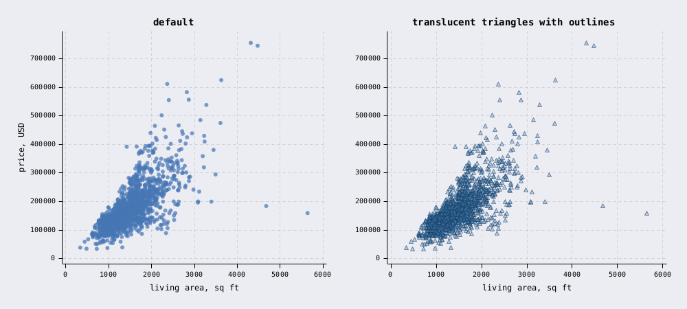
33.1.2 Colour and shape by group
Mapping :color and :shape to the same variable gives every species its colour and shape, and one legend.
Source: R Graph Gallery - Map a variable to a ggplot2 scatterplot. Data: Edgar Anderson’s iris measurements, R datasets package iris (Anderson 1935; Fisher 1936); licence: Part of R (GPL-2 | GPL-3).
(plot/render-image
{:data iris :mapping {:x :sepal-length :y :sepal-width :color :species :shape :species}
:charts [(chart/scatter {:size 7})]
:labels {:title "Iris sepals by species" :x "sepal length, cm" :y "sepal width, cm"}}
{:width 700 :height 500})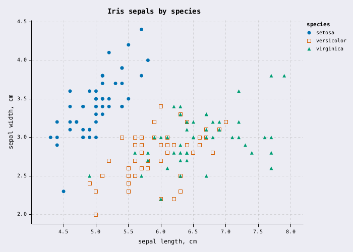
33.1.3 Text labels in boxes
A text chart names some cars; :background puts each label on a semi-transparent box, so the points it covers stay visible and the text stays readable over them.
Source: R Graph Gallery - Add text labels with ggplot2. Data: Motor Trend car road tests (1974), R datasets package mtcars (Henderson & Velleman 1981); licence: Part of R (GPL-2 | GPL-3).
(let [label-box {:size 9 :background [255 255 255 200] :inset 2 :mapping {:x :wt :y :mpg :label :model}}]
(plot/render-image
{:data mtcars :mapping {:x :wt :y :mpg}
:charts [(chart/scatter {:size 8 :color [200 60 40]})
(chart/text (merge label-box {:data (filterv #(> (double (:mpg %)) 31.0) mtcars)
:anchor [:left :middle] :offset [6 0]}))
(chart/text (merge label-box {:data (filterv #(or (> (double (:wt %)) 5.3) (> (double (:hp %)) 250.0)) mtcars)
:anchor [:right :middle] :offset [-6 0]}))]
:labels {:title "Cars by weight and fuel use" :x "weight, 1000 lbs" :y "miles per gallon"}}
{:width 750 :height 500}))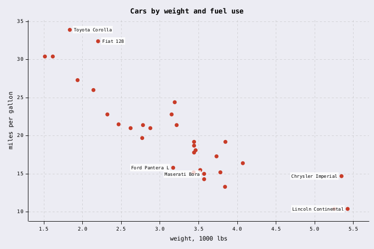
33.1.4 Rugs and marginal distributions
Margins share the panel’s axes: rugs (one line per value) beside both axes, or the densities of both variables.
Source: R Graph Gallery - Marginal distribution with ggplot2. Data: Old Faithful geyser eruptions, R datasets package faithful (Härdle 1991; Azzalini & Bowman 1990); licence: Part of R (GPL-2 | GPL-3).
(plot/render-image
{:data faithful :mapping {:x :eruptions :y :waiting} :charts [(chart/scatter {:size 4})]
:margins {:top {:charts (chart/rug) :size 25} :right {:charts (chart/rug) :size 25}}
:labels {:title "Old Faithful with rugs" :x "eruption, min" :y "waiting, min"}}
{:width 650 :height 480})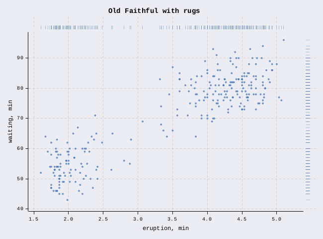
(plot/render-image
{:data faithful :mapping {:x :eruptions :y :waiting} :charts [(chart/scatter {:size 4})]
:margins {:top (chart/density {:fill [70 130 180 120]}) :right (chart/density {:fill [70 130 180 120]})}
:labels {:title "Old Faithful with marginal densities" :x "eruption, min" :y "waiting, min"}}
{:width 650 :height 520})
33.1.5 Linear fit with a confidence band
chart/smooth {:method :lm} adds the least-squares line and its 95 % confidence band.
Source: R Graph Gallery - Scatterplot with a regression line. Data: House prices: living area and sale price, data-to-viz example dataset 2_TwoNum (Yan Holtz; Kaggle House Prices competition); licence: MIT (data_to_viz repository).
(plot/render-image
{:data houses :mapping {:x :living-area :y :price}
:charts [(chart/scatter {:size 3 :color [0 0 0 70]}) (chart/smooth {:method :lm})]
:labels {:title "Price grows with living area" :x "living area, sq ft" :y "price, USD"}}
{:width 700 :height 480})
33.1.6 A scatter per group
A facet mapping draws one panel per species on shared scales.
Source: R Graph Gallery - Faceting with ggplot2. Data: Edgar Anderson’s iris measurements, R datasets package iris (Anderson 1935; Fisher 1936); licence: Part of R (GPL-2 | GPL-3).
(plot/render-image
{:data iris :mapping {:x :sepal-length :y :sepal-width :facet :species}
:charts [(chart/scatter {:size 5})]
:labels {:title "Iris sepals, a panel per species" :x "sepal length, cm" :y "sepal width, cm"}}
{:width 1000 :height 400})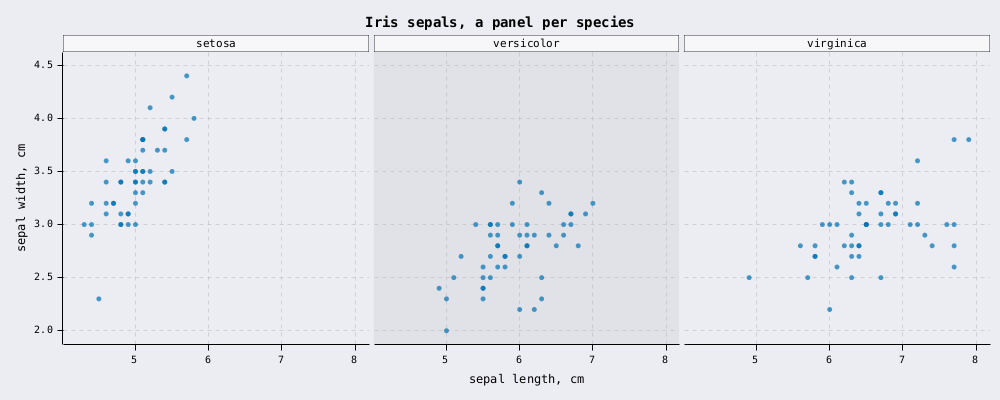
33.1.7 Size by overlap count
Integer data puts many cars on one point; counting the cars per point and mapping the count to the point’s area (:area true on the size scale) shows how many sit there.
Source: R Graph Gallery - Scatterplot. Data: Motor Trend car road tests (1974), R datasets package mtcars (Henderson & Velleman 1981); licence: Part of R (GPL-2 | GPL-3).
(let [counts (mapv (fn [[[cyl gear] cars]] {:cyl cyl :gear gear :cars (count cars)})
(group-by (juxt :cyl :gear) mtcars))]
(plot/render-image
{:data counts :mapping {:x :cyl :y :gear :size :cars}
:charts [(chart/scatter {:color [70 130 180 200]})]
:scales {:size {:area true :range [4 36] :title "cars"}}
:labels {:title "Cars per cylinder and gear count" :x "cylinders" :y "forward gears"}}
{:width 650 :height 450}))
33.1.8 Manhattan plot
A genome-wide association plot (seeded data): one point per marker at its position along the chromosomes and its −log10 p-value, chromosomes in alternating colours and numbered at their centres (explicit :ticks with a :formatter), the significance threshold 5·10⁻⁸ as a rule.
Source: R Graph Gallery - Manhattan plot.
(def markers
"Seeded association results: 22 chromosomes of 200-400 markers, uniform p-values with three peaks."
(let [rng (r/rng :mersenne 101)
peaks {3 0.4 9 0.7 16 0.3}]
(loop [chromosome 1 offset 0.0 rows []]
(if (> chromosome 22)
rows
(let [n (r/irandom rng 200 400)
chromosome-rows (for [i (range n)
:let [t (/ (double i) n)
peak (get peaks chromosome)
strength (if peak (* 9.0 (m/exp (- (m/sq (/ (- t peak) 0.03))))) 0.0)
p (* (r/drandom rng) (m/pow 10.0 (- strength)))]]
{:chromosome chromosome :position (+ offset i) :log-p (- (m/log10 (max p 1.0e-12)))})]
(recur (inc chromosome) (+ offset n) (into rows chromosome-rows)))))))| chromosome | position | log-p |
|---|---|---|
| 1 | 0.0 | 1.321090133402618 |
| 1 | 1.0 | 0.7254255854028658 |
| 1 | 2.0 | 0.10937040916998979 |
| 1 | 3.0 | 0.0702732624489996 |
| 1 | 4.0 | 1.018195079432974 |
| 1 | 5.0 | 0.5768220228695394 |
| 1 | 6.0 | 0.4434303735301068 |
| 1 | 7.0 | 0.6520557277177679 |
| 1 | 8.0 | 0.10660696402683194 |
| 1 | 9.0 | 0.577315467668362 |
| 1 | 10.0 | 0.13146550887608105 |
| 1 | 11.0 | 0.07147022229649572 |
| 1 | 12.0 | 0.05114169705832379 |
| 1 | 13.0 | 0.557647045257219 |
| 1 | 14.0 | 0.024200374772555124 |
| 1 | 15.0 | 0.7215572712806041 |
| 1 | 16.0 | 0.7744425026350125 |
| 1 | 17.0 | 0.9122967819583525 |
| 1 | 18.0 | 0.19547118084685794 |
| 1 | 19.0 | 0.059444391902772946 |
| 1 | 20.0 | 0.2148286096563049 |
| 1 | 21.0 | 0.10736662688214545 |
| 1 | 22.0 | 0.07083415930273512 |
| 1 | 23.0 | 0.2078307867807872 |
| 1 | 24.0 | 0.3143875760677496 |
| 1 | 25.0 | 0.2286689361115589 |
| 1 | 26.0 | 0.2049796028918247 |
| 1 | 27.0 | 0.5696103564533317 |
| 1 | 28.0 | 0.021315097689522434 |
| 1 | 29.0 | 1.869906698413462 |
| 1 | 30.0 | 0.1995572437170634 |
| 1 | 31.0 | 0.1328125777734478 |
| 1 | 32.0 | 0.10554589493793098 |
| 1 | 33.0 | 0.06477536557566124 |
| 1 | 34.0 | 0.22722149226592828 |
| 1 | 35.0 | 0.03889818418216146 |
| 1 | 36.0 | 0.1418168475724755 |
| 1 | 37.0 | 1.1497895543271632 |
| 1 | 38.0 | 0.057589103861989885 |
| 1 | 39.0 | 0.08549169738508867 |
| 1 | 40.0 | 0.639511148349671 |
| 1 | 41.0 | 0.1907283865939548 |
| 1 | 42.0 | 0.726341866606375 |
| 1 | 43.0 | 0.0678698487565619 |
| 1 | 44.0 | 1.5292106704649437 |
| 1 | 45.0 | 0.07169734425996548 |
| 1 | 46.0 | 0.31651892914074914 |
| 1 | 47.0 | 0.1301648485414591 |
| 1 | 48.0 | 0.10000070193553397 |
| 1 | 49.0 | 0.10954073426815966 |
| 1 | 50.0 | 0.45134210881535664 |
| 1 | 51.0 | 0.34841421331005396 |
| 1 | 52.0 | 0.13029389132889732 |
| 1 | 53.0 | 0.04913480386377777 |
| 1 | 54.0 | 0.6055397174988397 |
| 1 | 55.0 | 0.0033920334192492833 |
| 1 | 56.0 | 0.3015032969743674 |
| 1 | 57.0 | 0.9125902797089116 |
| 1 | 58.0 | 0.3331350206714257 |
| 1 | 59.0 | 0.12146943795179406 |
| 1 | 60.0 | 0.0928962335388104 |
| 1 | 61.0 | 0.6902674448584781 |
| 1 | 62.0 | 0.18716515573047776 |
| 1 | 63.0 | 0.15493787191261976 |
| 1 | 64.0 | 0.4987103351374514 |
| 1 | 65.0 | 3.790928323470816E-4 |
| 1 | 66.0 | 0.016200642665642834 |
| 1 | 67.0 | 0.17952188703893712 |
| 1 | 68.0 | 0.32505946707462896 |
| 1 | 69.0 | 0.1234262108372529 |
| 1 | 70.0 | 0.7806478404275248 |
| 1 | 71.0 | 0.20832413793665486 |
| 1 | 72.0 | 0.007986027183787853 |
| 1 | 73.0 | 0.026224509601937663 |
| 1 | 74.0 | 0.3454675839091202 |
| 1 | 75.0 | 0.49498848601206386 |
| 1 | 76.0 | 0.1490475327611436 |
| 1 | 77.0 | 0.049816956005540106 |
| 1 | 78.0 | 0.022176700864748062 |
| 1 | 79.0 | 0.058106064072997066 |
| 1 | 80.0 | 0.17587597824404708 |
| 1 | 81.0 | 0.7574124753510013 |
| 1 | 82.0 | 0.8117273884425281 |
| 1 | 83.0 | 0.25482134708120274 |
| 1 | 84.0 | 0.7995205557250042 |
| 1 | 85.0 | 0.9259894684826615 |
| 1 | 86.0 | 0.09911270732273096 |
| 1 | 87.0 | 0.5459345667781825 |
| 1 | 88.0 | 0.8084550289905961 |
| 1 | 89.0 | 0.3668581604275299 |
| 1 | 90.0 | 0.3881246628611805 |
| 1 | 91.0 | 0.3282595994065482 |
| 1 | 92.0 | 0.1234040634227983 |
| 1 | 93.0 | 0.2597301683792858 |
| 1 | 94.0 | 2.2112262165728076 |
| 1 | 95.0 | 1.043448634947657 |
| 1 | 96.0 | 0.5664236026450195 |
| 1 | 97.0 | 0.7591408258927068 |
| 1 | 98.0 | 0.037832200082531894 |
| 1 | 99.0 | 0.15515928310512367 |
| … | … | … |
(let [centres (into (sorted-map) (for [[chromosome rows] (group-by :chromosome markers)]
[(stats/mean (map :position rows)) chromosome]))]
(plot/render-image
{:data markers :mapping {:x :position :y :log-p :color #(if (odd? (:chromosome %)) "odd" "even")}
:charts [(chart/scatter {:size 3})
(chart/rule {:y (- (m/log10 5.0e-8)) :dash :dashed :color [200 40 40]})]
:scales {:x {:ticks (vec (keys centres)) :formatter #(str (get centres (double %)))}
:color {:range {"odd" [40 70 120] "even" [140 170 210]} :legend false}}
:theme {:panel {:grid {:x :none}}}
:labels {:title "Association with a trait along 22 chromosomes" :x "chromosome" :y "-log10 p"}}
{:width 1000 :height 400}))
33.1.9 Simpson’s paradox
Three groups (seeded): within each group y grows with x, across all of them it falls. One fit for everything points the wrong way; a fit per group shows the relation inside the groups.
Source: data-to-viz - Simpson’s paradox.
(def simpson
(let [rng (r/rng :mersenne 33)]
(vec (for [[g cx cy] [["A" 2.0 9.0] ["B" 5.0 6.0] ["C" 8.0 3.0]]
_ (range 40)
:let [dx (r/grandom rng 0.0 1.0)]]
{:group g :x (+ cx dx) :y (+ cy (* 0.8 dx) (r/grandom rng 0.0 0.5))}))))| group | x | y |
|---|---|---|
| A | 1.964851789392963 | 8.293392098333136 |
| A | 1.8506553288621237 | 7.994134154424934 |
| A | 2.4682031622430958 | 9.438554239321407 |
| A | 2.339649580463365 | 8.920732421423196 |
| A | 3.0902695866547676 | 9.68263359678026 |
| A | 1.2538220564626124 | 8.83299577380547 |
| A | 2.1843915905855322 | 10.188346349613735 |
| A | 2.869938240703129 | 9.983660269689159 |
| A | 3.7022689397102972 | 10.250856464153001 |
| A | 1.8765067624365201 | 7.9373114383204655 |
| A | 1.8411167628271052 | 9.271800689739065 |
| A | 0.6544402113380126 | 7.749149535867572 |
| A | 2.8408745240703306 | 9.61266948425986 |
| A | 2.067016347602631 | 8.597646404926156 |
| A | 2.12563489951287 | 8.879995060439057 |
| A | 1.3484728637738421 | 8.567706946253892 |
| A | 2.908064158562901 | 9.869689389775663 |
| A | 2.343433734770051 | 9.11868358537767 |
| A | -0.06369835858025485 | 7.70958186873844 |
| A | 1.1178627218415558 | 8.004903449617627 |
| A | 2.8018356321731286 | 10.739337184269665 |
| A | 2.601115153804444 | 9.721295785811398 |
| A | 3.0370188585344677 | 11.112654575703685 |
| A | 1.7554758833959316 | 9.223981179414029 |
| A | 2.882143698907368 | 9.453835389625427 |
| A | 1.831812962526217 | 8.56736711012351 |
| A | 3.27334191397109 | 10.232005181110196 |
| A | 2.0369498314217283 | 8.358106844227095 |
| A | 2.8444687173384553 | 10.45121533060675 |
| A | 3.3035963343041956 | 9.637304650793773 |
| A | 3.5448226337166133 | 10.462240767763149 |
| A | 2.5025077326127536 | 9.71561144193858 |
| A | 2.8961104917587654 | 9.893467766589119 |
| A | 0.6893230033879922 | 7.7995825932223095 |
| A | 2.2204631461921784 | 9.612868006042754 |
| A | 2.065396537528806 | 8.098651148742457 |
| A | 2.7999398068600474 | 9.199428681093458 |
| A | 1.8397318066298296 | 9.445534241607655 |
| A | 1.2086374093554357 | 8.253781348575542 |
| A | 3.673967683013235 | 10.657592641048797 |
| B | 5.605535926378746 | 7.8076596150314455 |
| B | 5.77256409836571 | 6.36148435003143 |
| B | 4.072775716123957 | 4.983628356710099 |
| B | 4.7616976534884445 | 5.087922125239712 |
| B | 4.116597251109011 | 4.471887610441705 |
| B | 5.268738697039081 | 6.99677831341429 |
| B | 3.545289340651612 | 5.564933271324392 |
| B | 3.624616073963369 | 5.722988083543513 |
| B | 4.834601312281533 | 5.873498104793147 |
| B | 5.60264679684919 | 6.033942683240947 |
| B | 4.384009996279789 | 5.589658932341485 |
| B | 4.7445351577924075 | 5.801468540501135 |
| B | 5.664017177388377 | 6.6657545128026126 |
| B | 5.699884592180361 | 5.882589607383901 |
| B | 5.445182245459797 | 6.15570946542215 |
| B | 4.494793925163821 | 5.882990726247141 |
| B | 3.1173307779715973 | 4.594755432965971 |
| B | 3.477931693443861 | 3.5897736072599216 |
| B | 5.2034185560544595 | 5.159058530463275 |
| B | 5.0238754415755595 | 6.436440252237034 |
| B | 4.178301210583946 | 4.7452572369133605 |
| B | 5.773571157206251 | 6.485372182942343 |
| B | 4.2960801249373 | 6.844286611756491 |
| B | 3.661347383957131 | 4.345414201582099 |
| B | 5.019505660805107 | 6.483464679727872 |
| B | 7.651291722506816 | 8.239654069576808 |
| B | 4.206715875987849 | 6.017272829066868 |
| B | 4.670932137273514 | 6.383624191750447 |
| B | 5.277489409868092 | 6.960817085715451 |
| B | 7.665910545722857 | 7.9243850550113635 |
| B | 5.078876307056935 | 7.460297007137912 |
| B | 5.260095466178881 | 5.5641987446222485 |
| B | 4.0352996081199874 | 5.677041667667212 |
| B | 5.603029997074368 | 6.884568942006892 |
| B | 6.497045379761575 | 7.063223234944211 |
| B | 6.058064016573274 | 7.3615898628581755 |
| B | 6.646832220837828 | 6.373774728500281 |
| B | 5.3436288457747825 | 7.204654790319295 |
| B | 5.603201258804736 | 6.775482865319951 |
| B | 6.073163275869223 | 6.822574901112882 |
| C | 7.605167199746975 | 3.4728555437681403 |
| C | 8.103475529278436 | 3.0029423364449523 |
| C | 8.477317932499913 | 3.7547390518650445 |
| C | 7.564381876559468 | 3.101797683458473 |
| C | 8.302566293730322 | 3.2887982886838416 |
| C | 8.347928193508992 | 3.2357808628112723 |
| C | 8.652796972133698 | 4.091730830773349 |
| C | 5.894352473109018 | 1.6751904759493659 |
| C | 8.70110080153371 | 3.496344546715223 |
| C | 9.793042379057077 | 4.63843199802634 |
| C | 7.374794858909034 | 3.600871448903887 |
| C | 8.25162939232895 | 2.5528875236787947 |
| C | 8.057322476855699 | 2.983419789333151 |
| C | 8.453590754189284 | 3.3958311367472493 |
| C | 8.152863549975093 | 1.5457205512327161 |
| C | 7.03874236843896 | 2.862982595265567 |
| C | 6.802051492258309 | 2.8071101676815458 |
| C | 5.964364724091371 | 0.5628270384772995 |
| C | 8.98766594250061 | 3.247585393017352 |
| C | 6.371536778313243 | 1.7900250685769812 |
| … | … | … |
(plot/render-image
(plot/arrange
[{:data simpson :mapping {:x :x :y :y}
:charts [(chart/scatter {:size 5 :color [90 90 90]}) (chart/smooth {:method :lm})]
:labels {:title "one fit: y falls with x"}}
{:data simpson :mapping {:x :x :y :y :color :group}
:charts [(chart/scatter {:size 5}) (chart/smooth {:method :lm})]
:labels {:title "a fit per group: y grows with x" :y nil}}]
{:columns 2})
{:width 1000 :height 430})
33.2 Heatmap
A grid of cells coloured by a value: rows and columns are categories (or binned numbers).
33.2.1 Basic heatmap, square and hexagon cells
European countries × demographic indicators, each indicator standardized (z-score) so the colours compare across columns of different units; the tile :cell :pointy-hex draws the same grid as a honeycomb.
(def europe (filterv #(= "Europe" (:continent %)) countries))| country | pop | birth-rate | mortality-rate | life-expectancy | infant-mortality | children-per-woman | growth-rate | population-aged-65 | group | continent |
|---|---|---|---|---|---|---|---|---|---|---|
| Channel Islands | 166 | 9.28 | 9.14 | 81.269 | 7.276 | 1.492 | 4.56 | 30 | North | Europe |
| Denmark | 5733 | 10.707 | 9.62 | 80.839 | 3.495 | 1.758 | 3.67 | 1132 | North | Europe |
| Estonia | 1302 | 10.698 | 12.657 | 77.342 | 2.843 | 1.657 | -2.63 | 256 | North | Europe |
| Finland | 5556 | 10.672 | 9.865 | 81.576 | 1.839 | 1.764 | 2.65 | 1212 | North | Europe |
| Iceland | 337 | 12.836 | 6.467 | 83.22 | 1.752 | 1.893 | 7.83 | 50 | North | Europe |
| Ireland | 4791 | 13.179 | 6.562 | 81.621 | 2.385 | 1.998 | 8.84 | 682 | North | Europe |
| Latvia | 1936 | 10.093 | 15.36 | 74.59 | 5.493 | 1.555 | -4.36 | 383 | North | Europe |
| Lithuania | 2817 | 10.459 | 16.187 | 73.831 | 3.076 | 1.641 | -4.27 | 535 | North | Europe |
| Norway | 5387 | 11.923 | 7.908 | 82.187 | 2.108 | 1.809 | 10.29 | 913 | North | Europe |
| Sweden | 9987 | 12.22 | 9.011 | 82.851 | 2.427 | 1.927 | 6.64 | 2044 | North | Europe |
| United Kingdom | 65913 | 12.385 | 9.096 | 81.327 | 3.559 | 1.909 | 6.06 | 11997 | North | Europe |
| Belarus | 9429 | 11.6 | 14.6 | 71.8 | 3.5 | 1.65 | -3.3 | 1387 | East | Europe |
| Bulgaria | 6992 | 9.4 | 15.6 | 74.6 | 8.0 | 1.6 | -7.6 | 1463 | East | Europe |
| Czech Republic | 10563 | 10.0 | 10.6 | 79.2 | 2.1 | 1.54 | 0.7 | 2067 | East | Europe |
| Hungary | 9754 | 9.3 | 13.5 | 75.7 | 4.2 | 1.41 | -3.5 | 1864 | East | Europe |
| Poland | 38523 | 9.4 | 10.4 | 78.1 | 4.0 | 1.33 | -1.2 | 6686 | East | Europe |
| Republic of Moldova | 4045 | 10.0 | 11.7 | 71.9 | 9.7 | 1.23 | -2.7 | 464 | East | Europe |
| Romania | 19105 | 8.9 | 13.7 | 75.2 | 8.3 | 1.54 | -6.9 | 3575 | East | Europe |
| Russian Federation | 143261 | 12.3 | 14.2 | 70.5 | 7.3 | 1.73 | -1.0 | 20676 | East | Europe |
| Slovakia | 5434 | 10.3 | 10.3 | 76.8 | 4.4 | 1.44 | 0.3 | 837 | East | Europe |
| Ukraine | 4417 | 10.6 | 15.6 | 71.3 | 8.3 | 1.56 | -5.4 | 7283 | East | Europe |
| Albania | 2919 | 13.8 | 7.8 | 78.5 | 12.5 | 1.78 | 2.7 | 393 | South | Europe |
| Bosnia and Herzegovina | 3782 | 8.4 | 11.1 | 77.1 | 6.4 | 1.23 | -2.9 | 644 | South | Europe |
| Croatia | 4195 | 9.1 | 12.8 | 78.0 | 3.2 | 1.48 | -3.7 | 844 | South | Europe |
| Greece | 10872 | 7.9 | 11.3 | 81.7 | 2.3 | 1.3 | -2.0 | 2383 | South | Europe |
| Italy | 59788 | 8.2 | 10.3 | 83.8 | 1.9 | 1.49 | -0.2 | 1397 | South | Europe |
| Malta | 421 | 9.0 | 9.3 | 81.2 | 4.0 | 1.49 | 2.0 | 86 | South | Europe |
| Montenegro | 626 | 11.0 | 10.3 | 76.7 | 3.6 | 1.65 | -0.1 | 94 | South | Europe |
| Portugal | 10229 | 7.5 | 10.7 | 81.9 | 2.6 | 1.24 | -3.4 | 2246 | South | Europe |
| Serbia | 8743 | 10.2 | 13.1 | 75.4 | 8.2 | 1.6 | -3.9 | 1626 | South | Europe |
| Slovenia | 2073 | 10.1 | 10.0 | 81.1 | 2.7 | 1.66 | 0.8 | 406 | South | Europe |
| Spain | 46117 | 8.5 | 9.2 | 83.3 | 2.5 | 1.38 | 1.1 | 9048 | South | Europe |
| TFYR Macedonia | 2085 | 11.1 | 9.8 | 76.0 | 8.4 | 1.56 | 0.9 | 284 | South | Europe |
| Austria | 8614 | 9.7 | 9.5 | 82.2 | 2.5 | 1.53 | 2.4 | 166 | West | Europe |
| Belgium | 11513 | 11.4 | 9.7 | 81.5 | 2.7 | 1.83 | 5.8 | 2171 | West | Europe |
| France | 65206 | 11.9 | 9.1 | 82.9 | 2.8 | 1.99 | 4.1 | 13167 | West | Europe |
| Germany | 80561 | 8.7 | 11.3 | 81.6 | 2.5 | 1.44 | -1.0 | 17746 | West | Europe |
| Luxembourg | 591 | 11.5 | 7.1 | 82.4 | 1.3 | 1.61 | 11.7 | 86 | West | Europe |
| Netherlands | 17085 | 10.5 | 8.8 | 82.1 | 3.0 | 1.77 | 3.0 | 333 | West | Europe |
| Switzerland | 8524 | 10.5 | 8.0 | 83.7 | 3.0 | 1.58 | 8.0 | 1592 | West | Europe |
Source: R Graph Gallery - Heatmap; data-to-viz - Heatmap (1, 2). Data: Countries: demographic indicators, data-to-viz example dataset multivariate (Yan Holtz; original source not documented); licence: MIT (data_to_viz repository).
(let [rows (z-scores europe)
heatmap (fn [cell title legend?]
{:data rows :mapping {:x :country :y :indicator :color :z} :legend legend?
:scales {:color {:range :RColorBrewer/RdBu :midpoint 0 :reverse true :title "z-score"}}
:theme {:axis {:x {:label-rotation 90}}}
:charts [(chart/tile {:cell cell})]
:labels {:title title :x nil :y nil}})]
(plot/render-image
(plot/arrange [(heatmap :square "square cells" false) (heatmap :pointy-hex "pointy-hex cells" true)]
{:columns 1})
{:width 1000 :height 800}))
33.2.2 Palettes, normalized columns
Raw values put every indicator on one colour scale, so life expectancy (around 80) drowns the rates (0-20); standardizing each column first gives every indicator the full palette. Any palette or gradient works: viridis on the left, a diverging RdBu around 0 on the right.
Source: R Graph Gallery - Heatmap with the levelplot function. Data: Countries: demographic indicators, data-to-viz example dataset multivariate (Yan Holtz; original source not documented); licence: MIT (data_to_viz repository).
(let [rows (z-scores (take 25 europe))
base {:data rows :theme {:axis {:x {:label-rotation 90}}} :labels {:x nil :y nil}}]
(plot/render-image
(plot/arrange
[(merge base {:mapping {:x :country :y :indicator :color :value} :charts [(chart/tile)]
:scales {:color {:range :viridis :title "value"}}
:labels {:title "raw values (viridis)" :x nil :y nil}})
(merge base {:mapping {:x :country :y :indicator :color :z} :charts [(chart/tile)]
:scales {:color {:range :RColorBrewer/RdBu :midpoint 0 :reverse true :title "z-score"}}
:labels {:title "standardized per indicator (RdBu)" :x nil :y nil}})]
{:columns 2})
{:width 1000 :height 520}))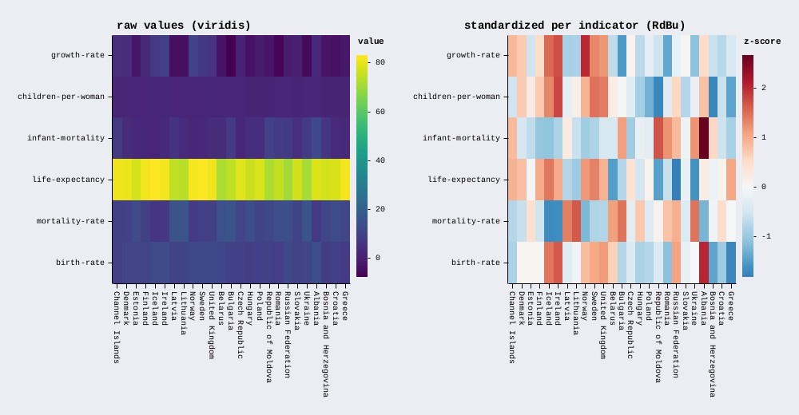
33.2.3 Side colour bar
A category of the columns as a strip of colours above the heatmap: plot/clustered-heatmap orders the rows and columns by clustering and draws :col-annotations ([accessor colour-scale-spec] pairs over the long rows) between the columns’ tree and the tiles, with its own legend (:row-annotations likewise along the rows). Here: up to six of the most populous countries of each continent (the dataset has two in North America), the continent as the side colour.
Source: R Graph Gallery - The heatmap function (side colours). Data: Countries: demographic indicators, data-to-viz example dataset multivariate (Yan Holtz; original source not documented); licence: MIT (data_to_viz repository).
(let [picked (vec (mapcat (fn [[_ rows]] (take 6 (sort-by #(- (double (:pop %))) rows)))
(sort-by key (group-by :continent countries))))]
(plot/render-image
(plot/clustered-heatmap (z-scores picked)
{:row :indicator :col :country :value :z :tree-size [0.12 0.2]
:col-annotations [[:continent {:range :set2}]]
:scales {:color {:range :RColorBrewer/RdBu :midpoint 0 :reverse true :title "z-score"}}
:title "Indicators of the largest countries per continent"})
{:width 1000 :height 600}))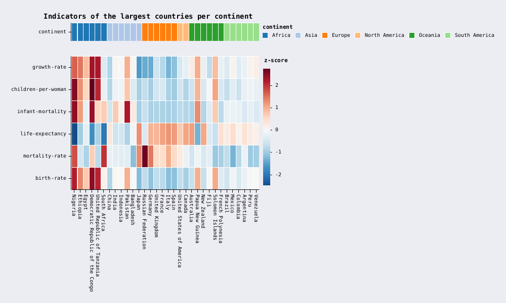
33.2.4 Values in cells: the correlation matrix
pairwise/matrix-rows gives r of every pair of variables, here the lower triangle with the diagonal, each pair once; one tile per pair, coloured on a diverging scale over [-1 1] and labelled with its value (:value-label, text in a contrasting colour). The y scale’s :reverse puts the first variable on top.
Source: R Graph Gallery - Correlation matrix with ggally (heatmap). Data: Motor Trend car road tests (1974), R datasets package mtcars (Henderson & Velleman 1981); licence: Part of R (GPL-2 | GPL-3).
(plot/render-image
{:data (pairwise/matrix-rows mtcars {:variables [:mpg :cyl :disp :hp :drat :wt :qsec :gear :carb]
:triangle :lower :self-pairs true})
:mapping {:x (comp name :x) :y (comp name :y) :color :value}
:scales {:y {:reverse true} :color {:range :RColorBrewer/RdBu :domain [-1 1] :title "r"}}
:charts [(chart/tile {:stroke-color :white :value-label true})]
:labels {:title "mtcars: correlation of every pair" :x nil :y nil}}
{:width 700 :height 600})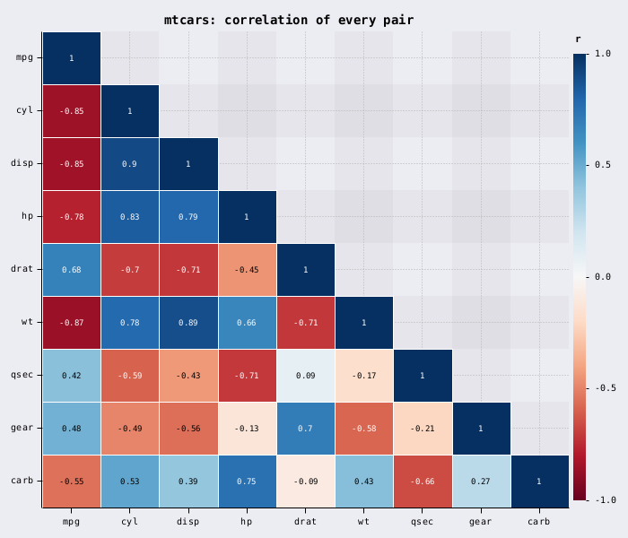
33.2.5 Calendar heatmap
Daily bitcoin price changes on a calendar: ISO week across, weekday down, a row of panels per year; the colour is the day’s change, capped at ±10 % so a few extreme days don’t flatten the rest.
Source: R Graph Gallery - The hourly heatmap (calendar layout). Data: Bitcoin daily price, 2013-2018, data-to-viz example dataset 3_TwoNumOrdered (Yan Holtz; CoinMarketCap via JesseVent/crypto); licence: MIT (data_to_viz repository).
(let [weekdays ["Mon" "Tue" "Wed" "Thu" "Fri" "Sat" "Sun"]
days (vec (for [[prev day] (partition 2 1 bitcoin)
:let [^LocalDate d (:date day)]]
{:week (.get d IsoFields/WEEK_OF_WEEK_BASED_YEAR)
:year (.get d IsoFields/WEEK_BASED_YEAR)
:weekday (weekdays (dec (.getValue ^DayOfWeek (.getDayOfWeek d))))
:change (m/constrain (- (/ (double (:value day)) (double (:value prev))) 1.0) -0.1 0.1)}))]
(plot/render-image
{:data days :mapping {:x :week :y :weekday :color :change :facet-row :year}
:scales {:y {:domain weekdays :reverse true}
:color {:range :RColorBrewer/RdYlGn :midpoint 0 :domain [-0.1 0.1] :title "daily change"
:formatter #(format "%+.0f%%" (* 100.0 (double %)))}}
:charts [(chart/tile {:stroke-color :white})]
:labels {:title "Bitcoin: daily price change, 2013-2018" :x "ISO week" :y nil}}
{:width 1000 :height 800}))
33.2.6 Row and column order
Categories come in data order by default (here the dataset’s subregions), which hides structure that a meaningful order shows: the band scale’s :order-by sorts the countries by a function of each one’s rows - its life expectancy.
Source: R Graph Gallery - Heatmap. Data: Countries: demographic indicators, data-to-viz example dataset multivariate (Yan Holtz; original source not documented); licence: MIT (data_to_viz repository).
(let [rows (z-scores europe)
life-expectancy (fn [country-rows] (some #(when (= "life-expectancy" (:indicator %)) (:value %)) country-rows))
heatmap (fn [order-by title legend?]
{:data rows :mapping {:x :country :y :indicator :color :z} :legend legend?
:scales (cond-> {:color {:range :RColorBrewer/RdBu :midpoint 0 :reverse true :title "z-score"}}
order-by (assoc :x {:order-by order-by}))
:theme {:axis {:x {:label-rotation 90}}}
:charts [(chart/tile)]
:labels {:title title :x nil :y nil}})]
(plot/render-image
(plot/arrange [(heatmap nil "data order" false) (heatmap life-expectancy "by life expectancy (:order-by)" true)] {:columns 1})
{:width 1000 :height 800}))
33.2.7 Smoothed heatmap
Measurements on a coarse lattice (seeded: two bumps and noise) as tiles, and the same values interpolated bicubically into a smooth field with contour lines.
Source: R Graph Gallery - 2D density chart (raster smoothing).
(def lattice
(let [rng (r/rng :mersenne 21)]
(vec (for [x (range 12) y (range 9)]
{:x x :y y :z (+ (* 8 (m/exp (- (/ (+ (m/sq (- x 3)) (m/sq (- y 6))) 6.0))))
(* 5 (m/exp (- (/ (+ (m/sq (- x 8)) (m/sq (- y 2))) 8.0))))
(* 0.6 (r/drandom rng)))}))))| x | y | z |
|---|---|---|
| 0 | 0 | 0.28583487104429245 |
| 0 | 1 | 0.10791487180475237 |
| 0 | 2 | 0.6030843843725184 |
| 0 | 3 | 0.9389467343849848 |
| 0 | 4 | 0.9211178618580388 |
| 0 | 5 | 1.9119705375688558 |
| 0 | 6 | 2.134064852433023 |
| 0 | 7 | 2.08609507944629 |
| 0 | 8 | 1.438453017789411 |
| 1 | 0 | 0.5952671498688122 |
| 1 | 1 | 0.19969212793906976 |
| 1 | 2 | 0.5844746003855454 |
| 1 | 3 | 1.4545009012104928 |
| 1 | 4 | 2.5409391316790555 |
| 1 | 5 | 3.8373025676266934 |
| 1 | 6 | 4.201832671922312 |
| 1 | 7 | 3.655938975804499 |
| 1 | 8 | 2.5001012113405694 |
| 2 | 0 | 0.618362826989968 |
| 2 | 1 | 0.6732405127858085 |
| 2 | 2 | 1.0761058547793179 |
| 2 | 3 | 2.156963479413669 |
| 2 | 4 | 3.9437515115583293 |
| 2 | 5 | 6.088869393303253 |
| 2 | 6 | 7.223963808658699 |
| 2 | 7 | 6.181575787813296 |
| 2 | 8 | 3.595401513596446 |
| 3 | 0 | 0.333213361563252 |
| 3 | 1 | 0.6697686994738297 |
| 3 | 2 | 1.2793636388027463 |
| 3 | 3 | 2.0862415090015136 |
| 3 | 4 | 4.458190459015801 |
| 3 | 5 | 6.970829698765733 |
| 3 | 6 | 8.534564851753958 |
| 3 | 7 | 7.057261446850634 |
| 3 | 8 | 4.359105718963007 |
| 4 | 0 | 0.5570483235833215 |
| 4 | 1 | 0.8944207518167911 |
| 4 | 2 | 1.6501578267870998 |
| 4 | 3 | 2.3840911784251038 |
| 4 | 4 | 4.244627066242449 |
| 4 | 5 | 6.02619508927574 |
| 4 | 6 | 7.187452425372401 |
| 4 | 7 | 5.8280157113365405 |
| 4 | 8 | 3.704818687511894 |
| 5 | 0 | 1.586086948590935 |
| 5 | 1 | 1.758570203324923 |
| 5 | 2 | 2.016978161678625 |
| 5 | 3 | 2.46072848102963 |
| 5 | 4 | 3.2577475177638577 |
| 5 | 5 | 4.594418052081281 |
| 5 | 6 | 4.468750221391473 |
| 5 | 7 | 4.13940626176397 |
| 5 | 8 | 2.3669197353085063 |
| 6 | 0 | 1.8887162462996216 |
| 6 | 1 | 3.1333427768332953 |
| 6 | 2 | 3.339224776138032 |
| 6 | 3 | 3.25110392251887 |
| 6 | 4 | 2.886591905153736 |
| 6 | 5 | 2.619771824298391 |
| 6 | 6 | 2.764658117098137 |
| 6 | 7 | 1.658904714071102 |
| 6 | 8 | 1.4316441251394127 |
| 7 | 0 | 3.0231573018396793 |
| 7 | 1 | 4.355480281556456 |
| 7 | 2 | 4.87069215197841 |
| 7 | 3 | 4.45222733511073 |
| 7 | 4 | 3.3300051593905104 |
| 7 | 5 | 2.4322224055470194 |
| 7 | 6 | 1.7382256200025936 |
| 7 | 7 | 1.134535831088446 |
| 7 | 8 | 0.41642342959362333 |
| 8 | 0 | 3.2315842696194066 |
| 8 | 1 | 4.495457710039368 |
| 8 | 2 | 5.4578978189143 |
| 8 | 3 | 4.574010303877224 |
| 8 | 4 | 3.3559974276459315 |
| 8 | 5 | 1.7895030317462122 |
| 8 | 6 | 1.3201149775070067 |
| 8 | 7 | 0.7909536026608897 |
| 8 | 8 | 0.4199979299355363 |
| 9 | 0 | 3.1218434814847975 |
| 9 | 1 | 3.9952972248372474 |
| 9 | 2 | 4.71571875898743 |
| 9 | 3 | 4.345432803474976 |
| 9 | 4 | 2.9519278627245535 |
| 9 | 5 | 1.6921846217085832 |
| 9 | 6 | 0.9685752885813317 |
| 9 | 7 | 0.424429410700548 |
| 9 | 8 | 0.11065502824543222 |
| 10 | 0 | 1.978359493499266 |
| 10 | 1 | 3.2237065179057676 |
| 10 | 2 | 3.101479844427019 |
| 10 | 3 | 3.0347060185303345 |
| 10 | 4 | 2.195848619843698 |
| 10 | 5 | 1.2401573576208922 |
| 10 | 6 | 0.4920506059344093 |
| 10 | 7 | 0.2403305652264046 |
| 10 | 8 | 0.18932609941153122 |
| 11 | 0 | 1.2104157576539942 |
| … | … | … |
(plot/render-image
(plot/arrange
[{:data lattice :mapping {:x :x :y :y :color :z} :charts [(chart/tile)] :legend false
:labels {:title "measured lattice"}}
{:data lattice :mapping {:x :x :y :y :value :z}
:charts [(chart/field {:interpolation :bicubic}) (chart/contour {:interpolation :bicubic :color [0 0 0 120]})]
:labels {:title "bicubic field and contours" :y nil}}]
{:columns 2})
{:width 1000 :height 430})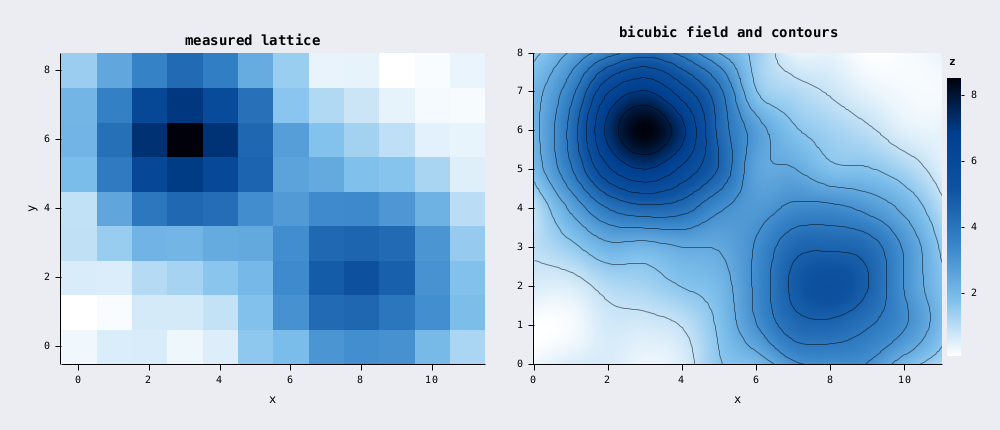
33.3 Correlogram
All pairs of several variables at once: plot/pairs lays out a matrix of cells sharing the variables’ scales.
33.3.1 Scatter-plot matrix by group
Scatter plots below the diagonal, densities on it, the correlation per species above it, coloured by species.
Source: R Graph Gallery - Correlogram; data-to-viz - Correlogram (1, 2). Data: Edgar Anderson’s iris measurements, R datasets package iris (Anderson 1935; Fisher 1936); licence: Part of R (GPL-2 | GPL-3).
(plot/render-image
(plot/pairs iris {:variables [:sepal-length :sepal-width :petal-length :petal-width] :mapping {:color :species}
:title "Iris measurements by species"})
{:width 950 :height 800})
33.3.2 Correlation glyphs
chart/correlation draws r of its cell as a glyph: ellipses (the shape of a bivariate normal with that r) below, pies (|r| as a filled angle) above, the variable names on the diagonal; the r colour bar on the side.
Source: R Graph Gallery - Correlation ellipses. Data: Motor Trend car road tests (1974), R datasets package mtcars (Henderson & Velleman 1981); licence: Part of R (GPL-2 | GPL-3).
(plot/render-image
(plot/pairs mtcars {:variables [:mpg :disp :hp :drat :wt :qsec]
:lower (chart/correlation {:glyph :ellipse}) :upper (chart/correlation {:glyph :pie})
:diagonal :names :title "mtcars correlogram"})
{:width 800 :height 750})
33.4 Bubble
A scatter plot with a third variable as the point’s size - by area, so a point twice the value has twice the ink.
33.4.1 Bubble chart: area, size range, colours and legend
Gapminder 2007: income (log axis) against life expectancy, population as the bubble’s area (:area true, size range 1-40 px), continent as colour; the :order mapping with :descending true draws the largest bubbles first, so the small ones stay on top. The left panel maps population linearly to the diameter: large countries look far larger than they are.
Source: R Graph Gallery - Bubble chart; data-to-viz - Bubble (1, 2). Data: Gapminder 2007: life expectancy, population and GDP per capita, data-to-viz example dataset 4_ThreeNum (Yan Holtz; Gapminder via the R gapminder package); licence: MIT (data_to_viz repository).
(let [bubbles (fn [area? title legend?]
{:data gapminder :legend legend?
:mapping {:x :gdp-per-cap :y :life-exp :size #(/ (double (:pop %)) 1.0e6) :color :continent :order :pop}
:scales {:x {:kind :log} :size (cond-> {:range [1 40] :title "population, M"} area? (assoc :area true))}
:charts [(chart/scatter {:stroke-color :white :stroke-width 0.5 :descending true})]
:labels {:title title :x "GDP per capita, USD" :y "life expectancy, years"}})]
(plot/render-image
(plot/arrange [(bubbles false "diameter linear in population" false) (bubbles true "area linear in population" true)]
{:columns 2 :widths [1 1.25]})
{:width 1000 :height 480}))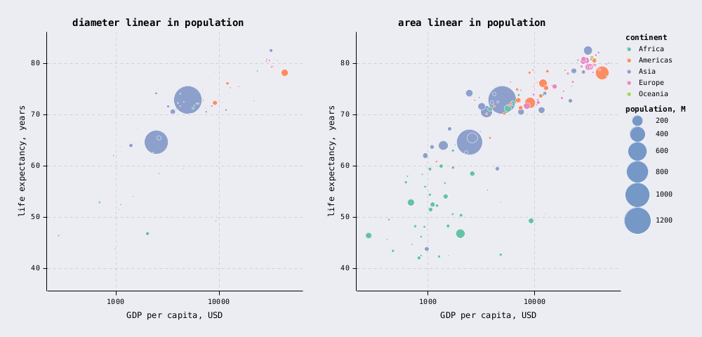
33.5 Connected scatter
Two variables over time: the points in time order joined by a path, dates written next to some of them.
33.5.1 Connected scatter with dates
Yearly means of US unemployment duration and savings rate, 1990-2014, joined in time order (:order :data) by a smooth path (:curve :bezier) ending in an arrowhead (:arrow, see line); labels on boxes keep the years readable where the path crosses itself.
Source: R Graph Gallery - Connected scatterplot with ggplot2; data-to-viz - Connected scatter (1, 2). Data: US economic time series, 1967-2015, R ggplot2 package economics (Federal Reserve Bank of St. Louis, FRED); licence: MIT (ggplot2).
(let [yearly (vec (for [[year rows] (sort-by key (group-by #(.getYear ^LocalDate (:date %)) economics))
:when (<= 1990 year 2014)]
{:year year :uempmed (stats/mean (map :uempmed rows)) :psavert (stats/mean (map :psavert rows))}))]
(plot/render-image
{:data yearly :mapping {:x :uempmed :y :psavert}
:charts [(chart/line {:order :data :curve :bezier :color [33 102 172] :arrow {:end true :size 12} :end-gap 4})
(chart/scatter {:size 6 :color [33 102 172]})
(chart/text {:data (filterv #(zero? (mod (long (:year %)) 4)) yearly)
:mapping {:x :uempmed :y :psavert :label :year}
:background [255 255 255 210] :inset 2 :anchor [:left :bottom] :offset [5 5]})]
:labels {:title "Unemployment duration vs savings rate, 1990-2014" :x "median unemployment, weeks" :y "savings rate, %"}}
{:width 800 :height 550}))
33.6 2D density
Where the points concentrate: counts in cells, a smooth density estimate, its contour lines.
33.6.1 2D histogram and hexbin
chart/bin2d counts points in cells: squares, or hexagons (the default) - regular on screen for the panel’s shape.
Source: R Graph Gallery - 2D density chart; data-to-viz - 2D density (1, 2). Data: Old Faithful geyser eruptions, R datasets package faithful (Härdle 1991; Azzalini & Bowman 1990); licence: Part of R (GPL-2 | GPL-3).
(plot/render-image
(plot/arrange
[{:data faithful :mapping {:x :eruptions :y :waiting} :charts [(chart/bin2d {:cell :square :bins 20})]
:legend false :labels {:title "2D histogram" :x "eruption, min" :y "waiting, min"}}
{:data faithful :mapping {:x :eruptions :y :waiting} :charts [(chart/bin2d {:bins 20})]
:labels {:title "hexbin" :x "eruption, min" :y nil}}]
{:columns 2})
{:width 1000 :height 450})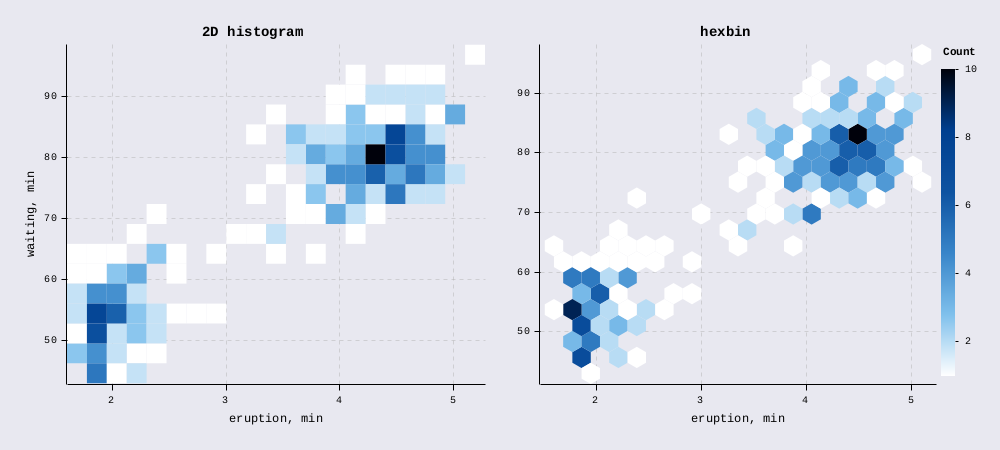
33.6.2 2D kernel density and contours
chart/field estimates the density (Gaussian kernel, a bandwidth per axis) and draws it as a raster; chart/contour draws its level lines, or with :filled true the bands between them.
Source: R Graph Gallery - 2D density plot with ggplot2. Data: Old Faithful geyser eruptions, R datasets package faithful (Härdle 1991; Azzalini & Bowman 1990); licence: Part of R (GPL-2 | GPL-3).
(plot/render-image
(plot/arrange
[{:data faithful :mapping {:x :eruptions :y :waiting}
:charts [(chart/field) (chart/contour {:color :white :line-width 0.8})] :legend false
:labels {:title "density raster and contour lines" :x "eruption, min" :y "waiting, min"}}
{:data faithful :mapping {:x :eruptions :y :waiting}
:charts [(chart/contour {:filled true :levels 8})]
:labels {:title "filled contour bands" :x "eruption, min" :y nil}}]
{:columns 2})
{:width 1000 :height 450})
33.6.3 Points over a density
The density as a backdrop for the points themselves.
Source: R Graph Gallery - 2D density chart. Data: Old Faithful geyser eruptions, R datasets package faithful (Härdle 1991; Azzalini & Bowman 1990); licence: Part of R (GPL-2 | GPL-3).
(plot/render-image
{:data faithful :mapping {:x :eruptions :y :waiting}
:charts [(chart/field {:alpha-factor 0.8}) (chart/scatter {:size 3 :color [255 255 255 200]})]
:labels {:title "Old Faithful eruptions over their density" :x "eruption, min" :y "waiting, min"}}
{:width 700 :height 500})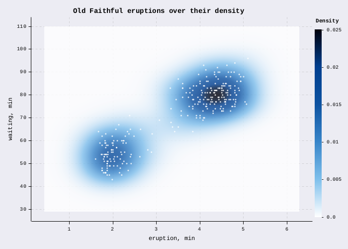
33.7 Functions
chart/field {:f f} samples a function of a point [x y] on a grid over a given domain (:n samples per axis) - no data needed. These examples have no gallery counterpart.
33.7.1 A function as a raster
MATLAB’s “peaks” surface - a maximum above the centre, a minimum below it and smaller lobes - on [−3, 3]², white to black, 300 × 300 samples, square pixels (:aspect :iso).
(defn peaks
"The peaks function of a point `[x y]`: 3(1 − x)² e^(−x² − (y + 1)²) − 10(x/5 − x³ − y⁵) e^(−x² − y²) −
e^(−(x + 1)² − y²) / 3."
[[^double x ^double y]]
(- (* 3.0 (m/sq (- 1.0 x)) (m/exp (- (- (* x x)) (m/sq (+ y 1.0)))))
(* 10.0 (- (/ x 5.0) (* x x x) (m/pow y 5.0)) (m/exp (- (- (* x x)) (* y y))))
(/ (m/exp (- (- (m/sq (+ x 1.0))) (* y y))) 3.0)))(plot/render-image
{:charts [(chart/field {:f peaks :domain {:x [-3 3] :y [-3 3]} :n 300})]
:scales {:color {:range [:white :black]}}
:aspect :iso
:labels {:title "peaks(x, y)"}}
{:width 650 :height 600})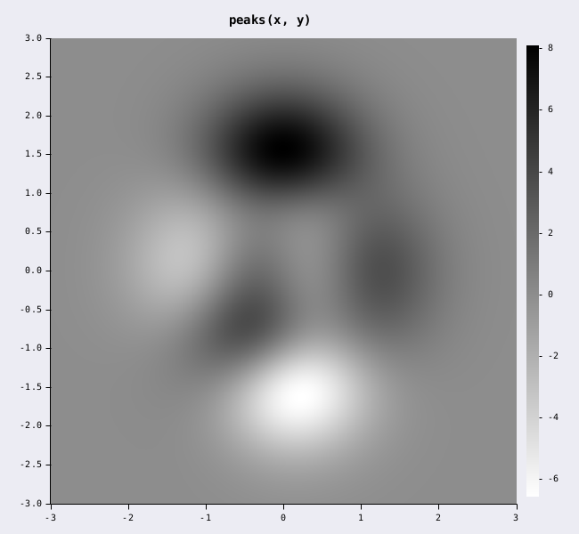
33.7.2 A function with contour lines
sin x · cos y on a diverging palette centred at 0, with contour lines at fixed levels.
(let [wave (fn [[x y]] (* (m/sin x) (m/cos y)))
domain {:x [0 (* 2 m/PI)] :y [0 4]}]
(plot/render-image
{:charts [(chart/field {:f wave :domain domain})
(chart/contour {:f wave :domain domain :color :black :levels [-0.75 -0.5 -0.25 0 0.25 0.5 0.75]})]
:scales {:color {:range :RColorBrewer/RdBu :midpoint 0 :title "sin x cos y"}}
:labels {:title "sin x cos y with contour lines"}}
{:width 700 :height 450}))
33.8 Overplotting
With thousands of points a scatter plot turns into a blot. The usual ways out, on 53 940 diamonds.
33.8.1 Size, transparency, sampling, binning, facets, margins
Smaller points and transparency let density show; a sample keeps the shape with fewer points; hexagon counts replace points by numbers; facets split the cloud by a category; marginal densities show where it is thick.
Source: data-to-viz - Overplotting. Data: Prices and attributes of round cut diamonds, R ggplot2 package diamonds (Wickham et al.); licence: MIT (ggplot2).
(let [base {:data diamonds :mapping {:x :carat :y :price} :scales {:x {:domain [0 5.5] :nice false :expand [0 0]} :y {:domain [0 20000] :nice false :expand [0 0]}}}
sample (let [rng (r/rng :mersenne 9)] (filterv (fn [_] (< (r/drandom rng) 0.04)) diamonds))]
(plot/render-image
(plot/arrange
[(merge base {:charts [(chart/scatter)] :labels {:title "all points" :x "carat" :y "price, USD"}})
(merge base {:charts [(chart/scatter {:size 1})] :labels {:title "small points" :x "carat" :y nil}})
(merge base {:charts [(chart/scatter {:size 3 :color [30 60 120 12]})] :labels {:title "transparency" :x "carat" :y nil}})
(merge base {:data sample :charts [(chart/scatter {:size 3 :color [30 60 120 120]})]
:labels {:title "4 % sample" :x "carat" :y "price, USD"}})
(merge base {:charts [(chart/bin2d {:bins 30})] :legend false :labels {:title "hexbin" :x "carat" :y nil}})
(merge base {:charts [(chart/scatter {:size 2 :color [30 60 120 20]})]
:margins {:top (chart/density {:fill [30 60 120 100]}) :right (chart/density {:fill [30 60 120 100]})}
:labels {:title "marginal densities" :x "carat" :y nil}})]
{:columns 3})
{:width 1000 :height 700}))
Source: data-to-viz - Overplotting (facets). Data: Prices and attributes of round cut diamonds, R ggplot2 package diamonds (Wickham et al.); licence: MIT (ggplot2).
(plot/render-image
{:data diamonds :mapping {:x :carat :y :price :facet :cut}
:charts [(chart/scatter {:size 2 :color [30 60 120 25]})]
:scales {:facet {:domain ["Fair" "Good" "Very Good" "Premium" "Ideal"]}}
:labels {:title "Diamonds: a panel per cut, worst to best" :x "carat" :y "price, USD"}}
{:width 1000 :height 400})
33.8.2 Jitter
Integer values pile up on a few positions; :jitter [dx dy] moves every point by a random offset within ±dx, ±dy (data units) so the piles spread - :rng with a seed makes it the same in every rendering.
Source: data-to-viz - Overplotting (jitter). Data: Motor Trend car road tests (1974), R datasets package mtcars (Henderson & Velleman 1981); licence: Part of R (GPL-2 | GPL-3).
(let [gears (fn [title jitter]
{:data mtcars :mapping {:x :cyl :y :gear}
:charts [(chart/scatter (cond-> {:size 7 :color [40 40 40 120]}
jitter (assoc :jitter jitter :rng (r/rng :mersenne 7))))]
:labels {:title title :x "cylinders" :y "forward gears"}})]
(plot/render-image
(plot/arrange [(gears "32 cars on 8 positions" nil) (gears ":jitter [0.25 0.15]" [0.25 0.15])] {:columns 2})
{:width 900 :height 420}))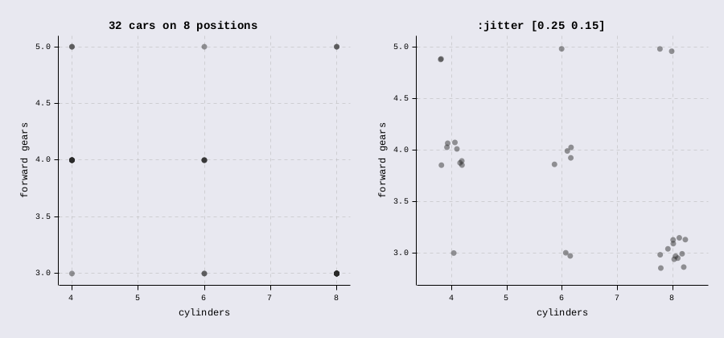
33.9 Caveats
33.9.1 Anscombe’s quartet
Four datasets with the same means, variances, linear fit and r ≈ 0.82 - and four different relations: a line, a curve, a line with an outlier, a single far point making the correlation. Always look at the scatter plot. The same mean and spread of x and the same residual variance give the same line and confidence band; drawn over the whole x domain (:full-range with an explicit :domain, shared by the panels) they coincide.
Source: Anscombe (1973), Graphs in Statistical Analysis. Data: Anscombe’s quartet: similar statistics, different patterns, vega-datasets 3.3.1 anscombe.json (https://cdn.jsdelivr.net/npm/vega-datasets@3.3.1/data/anscombe.json); original: Anscombe’s quartet (Wikipedia), Anscombe, F. J. (1973). Graphs in Statistical Analysis. The American Statistician, 27(1):17-21.; licence: none listed - see vega-datasets (cite Vega as the source).
(def anscombe (nu/dataset :anscombe))| series | x | y |
|---|---|---|
| I | 10.0 | 8.04 |
| I | 8.0 | 6.95 |
| I | 13.0 | 7.58 |
| I | 9.0 | 8.81 |
| I | 11.0 | 8.33 |
| I | 14.0 | 9.96 |
| I | 6.0 | 7.24 |
| I | 4.0 | 4.26 |
| I | 12.0 | 10.84 |
| I | 7.0 | 4.81 |
| I | 5.0 | 5.68 |
| II | 10.0 | 9.14 |
| II | 8.0 | 8.14 |
| II | 13.0 | 8.74 |
| II | 9.0 | 8.77 |
| II | 11.0 | 9.26 |
| II | 14.0 | 8.1 |
| II | 6.0 | 6.13 |
| II | 4.0 | 3.1 |
| II | 12.0 | 9.13 |
| II | 7.0 | 7.26 |
| II | 5.0 | 4.74 |
| III | 10.0 | 7.46 |
| III | 8.0 | 6.77 |
| III | 13.0 | 12.74 |
| III | 9.0 | 7.11 |
| III | 11.0 | 7.81 |
| III | 14.0 | 8.84 |
| III | 6.0 | 6.08 |
| III | 4.0 | 5.39 |
| III | 12.0 | 8.15 |
| III | 7.0 | 6.42 |
| III | 5.0 | 5.73 |
| IV | 8.0 | 6.58 |
| IV | 8.0 | 5.76 |
| IV | 8.0 | 7.71 |
| IV | 8.0 | 8.84 |
| IV | 8.0 | 8.47 |
| IV | 8.0 | 7.04 |
| IV | 8.0 | 5.25 |
| IV | 19.0 | 12.5 |
| IV | 8.0 | 5.56 |
| IV | 8.0 | 7.91 |
| IV | 8.0 | 6.89 |
(let [r-label (fn [rows] (format "r = %.2f" (stats/pearson-correlation (map :x rows) (map :y rows))))]
(plot/render-image
{:data anscombe :mapping {:x :x :y :y :facet :series}
:facets {:columns 4}
:scales {:x {:domain [3 20]}}
:charts [(chart/smooth {:method :lm :full-range true})
(chart/scatter {:size 7 :color [200 60 40]})
(chart/text {:data (vec (for [[series rows] (group-by :series anscombe)] {:series series :x 4 :y 13 :label (r-label rows)}))
:mapping {:x :x :y :y :label :label} :anchor [:left :top]
:background [255 255 255 210] :inset 3})]
:labels {:title "Anscombe's quartet: one r, four relations"}}
{:width 1000 :height 330}))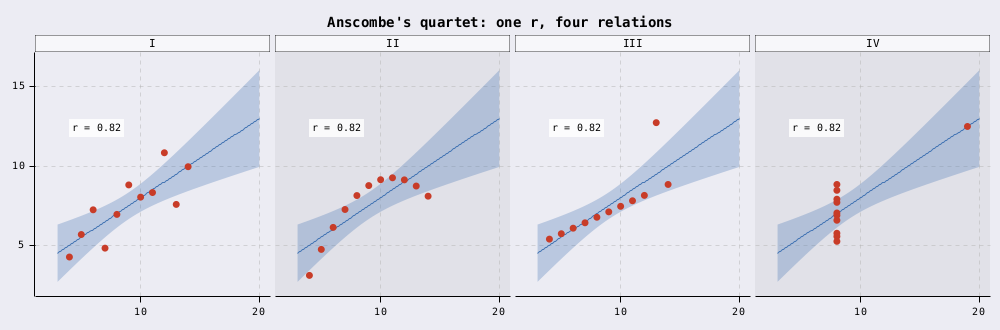
33.9.2 Other caveats
Correlation is not causation: two variables can move together because a third one drives both.
Pearson’s r measures only a linear relation: very different clouds (Anscombe’s quartet) share one r; look at the scatter plot, and use Spearman or Kendall (
chart/correlation {:method :spearman}) for monotone relations.Bubbles: map the value to the area (
:area true), not the diameter, or large values look far larger.2D histograms and densities depend on the cell size or bandwidth: try a few before reading shapes into them.
source: notebooks/use_cases/correlation.clj